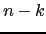
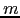

<!DOCTYPE HTML PUBLIC "-//W3C//DTD HTML 3.2 Final//EN">

<!--Converted with LaTeX2HTML 2008 (1.71)
original version by:  Nikos Drakos, CBLU, University of Leeds
* revised and updated by:  Marcus Hennecke, Ross Moore, Herb Swan
* with significant contributions from:
  Jens Lippmann, Marek Rouchal, Martin Wilck and others -->
<HTML>
<HEAD>
<TITLE>Un ejemplo sencillo</TITLE>
<META NAME="description" CONTENT="Un ejemplo sencillo">
<META NAME="keywords" CONTENT="perlexamples">
<META NAME="resource-type" CONTENT="document">
<META NAME="distribution" CONTENT="global">

<META NAME="Generator" CONTENT="LaTeX2HTML v2008">
<META HTTP-EQUIV="Content-Style-Type" CONTENT="text/css">

<LINK REL="STYLESHEET" HREF="mystyle.css">

<LINK REL="next" HREF="node51.html">
<LINK REL="previous" HREF="node49.html">
<LINK REL="up" HREF="node49.html">
<LINK REL="next" HREF="node51.html">
</HEAD>

<BODY >

<A NAME="tex2html1785"
  HREF="node51.html">
</A> 
<A NAME="tex2html1779"
  HREF="node49.html">
</A> 
<A NAME="tex2html1773"
  HREF="node49.html">
</A> 
<A NAME="tex2html1781"
  HREF="node1.html">
</A> 
<A NAME="tex2html1783"
  HREF="node322.html">
</A> <A NAME="tex2html2"
  HREF="http://nereida.deioc.ull.es/~pl/"></A><A NAME="tex2html3"
  HREF="http://campusvirtual.ull.es/0910/course/view.php?id=1148"></A><A NAME="tex2html4"
  HREF="pl.ps"></A><A NAME="tex2html5"
  HREF="perl_errata_form.html"></A><A NAME="tex2html6"
  HREF="http://search.cpan.org/"></A><A NAME="tex2html7"
  HREF="http://www.perlmonks.org/?node=Seekers of Perl Wisdom"></A><A NAME="tex2html8"
  HREF="http://perldoc.perl.org/"></A><A NAME="tex2html9"
  HREF="http://nereida.deioc.ull.es/~lhp/perlexamples/"></A><A NAME="tex2html10"
  HREF="http://www.google.es/"></A><A NAME="tex2html11"
  HREF="http://www.etsii.ull.es/"></A><A NAME="tex2html12"
  HREF="http://www.ull.es/"></A><A NAME="tex2html13"
  HREF="http://nereida.deioc.ull.es/"></A>
<BR>
<B> Sig:</B> <A NAME="tex2html1786"
  HREF="node51.html">Depuración de Expresiones Regulares</A>
<B>Sup:</B> <A NAME="tex2html1780"
  HREF="node49.html">Introducción</A>
<B> Ant:</B> <A NAME="tex2html1774"
  HREF="node49.html">Introducción</A>
 <B>Err:</B> <a href="perl_errata_form.html" target="_blank">Si hallas una errata ...</a>
<BR> <P>

<!--End of Navigation Panel-->
<!--Table of Child-Links-->
<A NAME="CHILD_LINKS"><STRONG>Subsecciones</STRONG></A>

<UL>
<LI><UL>
<LI><A NAME="tex2html1787"
  HREF="node50.html#SECTION00811010000000000000">Matching en Contexto Escalar</A>
<LI><A NAME="tex2html1788"
  HREF="node50.html#SECTION00811020000000000000">Número de Paréntesis</A>
<LI><A NAME="tex2html1789"
  HREF="node50.html#SECTION00811030000000000000">Contexto de Lista</A>
<LI><A NAME="tex2html1790"
  HREF="node50.html#SECTION00811040000000000000">El modificador <TT>s</TT></A>
<LI><A NAME="tex2html1791"
  HREF="node50.html#SECTION00811050000000000000">El modificador <TT>m</TT></A>
<LI><A NAME="tex2html1792"
  HREF="node50.html#SECTION00811060000000000000">El conversor de temperaturas reescrito usando contexto de lista</A>
<LI><A NAME="tex2html1793"
  HREF="node50.html#SECTION00811070000000000000">La opción <TT>x</TT></A>
<LI><A NAME="tex2html1794"
  HREF="node50.html#SECTION00811080000000000000">Paréntesis sin memoria</A>
<LI><A NAME="tex2html1795"
  HREF="node50.html#SECTION00811090000000000000">Interpolación en los patrones: La opción <TT>o</TT></A>
<LI><A NAME="tex2html1796"
  HREF="node50.html#SECTION008110100000000000000">Cuantificadores greedy</A>
<LI><A NAME="tex2html1797"
  HREF="node50.html#SECTION008110110000000000000">Regexp y Bucles Infinitos</A>
<LI><A NAME="tex2html1798"
  HREF="node50.html#SECTION008110120000000000000">Cuantificadores <I>lazy</I></A>
<LI><A NAME="tex2html1799"
  HREF="node50.html#SECTION008110130000000000000">Descripción detallada del proceso de matching</A>
<LI><A NAME="tex2html1800"
  HREF="node50.html#SECTION008110140000000000000">Rendimiento</A>
<LI><A NAME="tex2html1801"
  HREF="node50.html#SECTION008110150000000000000">Eliminación de Comentarios de un Programa C</A>
<LI><A NAME="tex2html1802"
  HREF="node50.html#SECTION008110160000000000000">Negaciones y operadores <I>lazy</I></A>
<LI><A NAME="tex2html1803"
  HREF="node50.html#SECTION008110170000000000000">Copia y sustitución simultáneas</A>
<LI><A NAME="tex2html1804"
  HREF="node50.html#SECTION008110180000000000000">Referencias a Paréntesis Previos</A>
<LI><A NAME="tex2html1805"
  HREF="node50.html#SECTION008110190000000000000">Usando Referencias con Nombre (Perl 5.10)</A>
<LI><A NAME="tex2html1806"
  HREF="node50.html#SECTION008110200000000000000">Grupos con Nombre y Factorización</A>
<LI><A NAME="tex2html1807"
  HREF="node50.html#SECTION008110210000000000000">LLamadas a expresiones regulares via paréntesis con memoria</A>
<LI><A NAME="tex2html1808"
  HREF="node50.html#SECTION008110220000000000000">Reutilizando Expresiones Regulares</A>
<LI><A NAME="tex2html1809"
  HREF="node50.html#SECTION008110230000000000000">El Módulo Regexp::Common</A>
<LI><A NAME="tex2html1810"
  HREF="node50.html#SECTION008110240000000000000">Smart Matching</A>
<LI><A NAME="tex2html1811"
  HREF="node50.html#SECTION008110250000000000000">Ejercicios</A>
</UL></UL>
<!--End of Table of Child-Links-->
<HR>

<H2><A NAME="SECTION00811000000000000000"></A>
<A NAME="section:ejemplo"></A>
<BR>
Un ejemplo sencillo
</H2>

<P>

<H4><A NAME="SECTION00811010000000000000">
Matching en Contexto Escalar</A>
</H4>
  

<P>

<pre>
pl@nereida:~/Lperltesting$ cat -n c2f.pl
<span class="synLinenum">    1</span>   <span class="synComment">#!/usr/bin/perl -w</span>
<span class="synLinenum">    2</span>   <span class="synStatement">use strict</span>;
<span class="synLinenum">    3</span> 
<span class="synLinenum">    4</span>   <span class="synStatement">print</span> <span class="synConstant">"Enter a temperature (i.e. 32F, 100C):</span><span class="synSpecial">\n</span><span class="synConstant">"</span>;
<span class="synLinenum">    5</span>   <span class="synStatement">my</span> <span class="synIdentifier">$input</span> = <span class="synIdentifier">&lt;STDIN&gt;</span>;
<span class="synLinenum">    6</span>   <span class="synStatement">chomp</span>(<span class="synIdentifier">$input</span>);
<span class="synLinenum">    7</span> 
<span class="synLinenum">    8</span>   <span class="synStatement">if</span> (<span class="synIdentifier">$input</span> !~ <span class="synStatement">m/</span><span class="synConstant">^</span><span class="synSpecial">([-+]?[0-9]+(\.[0-9]*)?)\s*([CF])</span><span class="synConstant">$</span><span class="synStatement">/i</span>) {
<span class="synLinenum">    9</span>     <span class="synStatement">warn</span> <span class="synConstant">"Expecting a temperature, so don't understand </span><span class="synSpecial">\"</span><span class="synIdentifier">$input</span><span class="synSpecial">\"</span><span class="synConstant">.</span><span class="synSpecial">\n</span><span class="synConstant">"</span>;
<span class="synLinenum">   10</span>   }
<span class="synLinenum">   11</span>   <span class="synStatement">else</span> {
<span class="synLinenum">   12</span>     <span class="synStatement">my</span> <span class="synIdentifier">$InputNum</span> = <span class="synIdentifier">$1</span>;
<span class="synLinenum">   13</span>     <span class="synStatement">my</span> <span class="synIdentifier">$type</span> = <span class="synIdentifier">$3</span>;
<span class="synLinenum">   14</span>     <span class="synStatement">my</span> (<span class="synIdentifier">$celsius</span>, <span class="synIdentifier">$farenheit</span>);
<span class="synLinenum">   15</span>     <span class="synStatement">if</span> (<span class="synIdentifier">$type</span> <span class="synStatement">eq</span> <span class="synConstant">"C"</span> <span class="synStatement">or</span> <span class="synIdentifier">$type</span> <span class="synStatement">eq</span> <span class="synConstant">"c"</span>) {
<span class="synLinenum">   16</span>       <span class="synIdentifier">$celsius</span> = <span class="synIdentifier">$InputNum</span>;
<span class="synLinenum">   17</span>       <span class="synIdentifier">$farenheit</span> = (<span class="synIdentifier">$celsius</span> * <span class="synConstant">9</span>/<span class="synConstant">5</span>)<span class="synConstant">+32</span>;
<span class="synLinenum">   18</span>     }
<span class="synLinenum">   19</span>     <span class="synStatement">else</span> {
<span class="synLinenum">   20</span>       <span class="synIdentifier">$farenheit</span> = <span class="synIdentifier">$InputNum</span>;
<span class="synLinenum">   21</span>       <span class="synIdentifier">$celsius</span> = (<span class="synIdentifier">$farenheit</span> <span class="synConstant">-32</span>)*<span class="synConstant">5</span>/<span class="synConstant">9</span>;
<span class="synLinenum">   22</span>     }
<span class="synLinenum">   23</span>     <span class="synStatement">printf</span> <span class="synConstant">"%.2f C = %.2f F</span><span class="synSpecial">\n</span><span class="synConstant">"</span>, <span class="synIdentifier">$celsius</span>, <span class="synIdentifier">$farenheit</span>;
<span class="synLinenum">   24</span>   }
</pre>

<P>
Véase también:

<P>

<UL>
<LI><code>perldoc</code> <A NAME="tex2html21"
  HREF="http://search.cpan.org/perldoc/?perlrequick"><TT>perlrequick</TT></A>
</LI>
<LI><code>perldoc</code> <A NAME="tex2html22"
  HREF="http://search.cpan.org/perldoc/?perlretut"><TT>perlretut</TT></A>
</LI>
<LI><code>perldoc</code> <A NAME="tex2html23"
  HREF="http://search.cpan.org/perldoc/?perlre"><TT>perlre</TT></A>
</LI>
<LI><code>perldoc</code> <A NAME="tex2html24"
  HREF="http://search.cpan.org/perldoc/?perlreref"><TT>perlreref</TT></A>
</LI>
</UL>

<P>
Ejecución con el depurador:

<P>

<pre>
pl@nereida:~/Lperltesting$  <span  class="dbuser">perl -wd c2f.pl</span>
Loading DB routines from perl5db.pl version 1.28
Editor support available.
Enter h or `h h' for help, or `man perldebug' for more help.
main::(c2f.pl:4):       print "Enter a temperature (i.e. 32F, 100C):\n";
DB<1>  <span  class="dbuser">c 8</span>
Enter a temperature (i.e. 32F, 100C):
32F
main::(c2f.pl:8):       if ($input !~ m/^([-+]?[0-9]+(\.[0-9]*)?)\s*([CF])$/i) {
DB<2>  <span  class="dbuser">n</span>
main::(c2f.pl:12):        my $InputNum = $1;
DB<2>  <span  class="dbuser">x ($1, $2, $3)</span>
0  32
1  undef
2  'F'
DB<3>  <span  class="dbuser">use YAPE::Regex::Explain</span>
DB<4>  <span  class="dbuser">p YAPE::Regex::Explain->new('([-+]?[0-9]+(\.[0-9]*)?)\s*([CF])$')->explain</span>
The regular expression:
(?-imsx:([-+]?[0-9]+(\.[0-9]*)?)\s*([CF])$)
matches as follows:

NODE                     EXPLANATION
----------------------------------------------------------------------
(?-imsx:                 group, but do not capture (case-sensitive)
                         (with ^ and $ matching normally) (with . not
                         matching \n) (matching whitespace and #
                         normally):
----------------------------------------------------------------------
  (                        group and capture to \1:
----------------------------------------------------------------------
    [-+]?                    any character of: '-', '+' (optional
                             (matching the most amount possible))
----------------------------------------------------------------------
    [0-9]+                   any character of: '0' to '9' (1 or more
                             times (matching the most amount
                             possible))
----------------------------------------------------------------------
    (                        group and capture to \2 (optional
                             (matching the most amount possible)):
----------------------------------------------------------------------
      \.                       '.'
----------------------------------------------------------------------
      [0-9]*                   any character of: '0' to '9' (0 or
                               more times (matching the most amount
                               possible))
----------------------------------------------------------------------
    )?                       end of \2 (NOTE: because you're using a
                             quantifier on this capture, only the
                             LAST repetition of the captured pattern
                             will be stored in \2)
----------------------------------------------------------------------
  )                        end of \1
----------------------------------------------------------------------
  \s*                      whitespace (\n, \r, \t, \f, and " ") (0 or
                           more times (matching the most amount
                           possible))
----------------------------------------------------------------------
  (                        group and capture to \3:
----------------------------------------------------------------------
    [CF]                     any character of: 'C', 'F'
----------------------------------------------------------------------
  )                        end of \3
----------------------------------------------------------------------
  $                        before an optional \n, and the end of the
                           string
----------------------------------------------------------------------
)                        end of grouping
----------------------------------------------------------------------
</pre>

<P>
<A NAME="section:dolar1"></A>Dentro de una expresión regular es necesario 
referirse a los textos que casan con el primer, paréntesis,
segundo, etc. como <code>\1</code>, <code>\2,</code> etc. La notación 
<code>$1</code> se refieré a lo que casó con el primer paréntesis
en el último <I>matching</I>, no en el actual. Veamos un ejemplo:

<P>

<pre>
pl@nereida:~/Lperltesting$ cat -n dollar1slash1.pl
<span class="synLinenum">    1</span>   <span class="synComment">#!/usr/bin/perl -w</span>
<span class="synLinenum">    2</span>   <span class="synStatement">use strict</span>;
<span class="synLinenum">    3</span> 
<span class="synLinenum">    4</span>   <span class="synStatement">my</span> <span class="synIdentifier">$a</span> = <span class="synConstant">"hola juanito"</span>;
<span class="synLinenum">    5</span>   <span class="synStatement">my</span> <span class="synIdentifier">$b</span> = <span class="synConstant">"adios anita"</span>;
<span class="synLinenum">    6</span> 
<span class="synLinenum">    7</span>   <span class="synIdentifier">$a</span> =~<span class="synStatement"> /</span><span class="synSpecial">(</span><span class="synConstant">ani</span><span class="synSpecial">)</span><span class="synStatement">/</span>;
<span class="synLinenum">    8</span>   <span class="synIdentifier">$b</span> =~ <span class="synStatement">s/</span><span class="synSpecial">(</span><span class="synConstant">adios</span><span class="synSpecial">)</span><span class="synConstant"> </span><span class="synSpecial">*(</span><span class="synIdentifier">$1</span><span class="synSpecial">)</span><span class="synStatement">/</span><span class="synSpecial">\U</span><span class="synIdentifier">$1</span><span class="synConstant"> </span><span class="synIdentifier">$2</span><span class="synStatement">/</span>;
<span class="synLinenum">    9</span>   <span class="synStatement">print</span> <span class="synConstant">"</span><span class="synIdentifier">$b</span><span class="synSpecial">\n</span><span class="synConstant">"</span>;
</pre>
Observe como el <code>$1</code> que aparece en la cadena de reemplazo (línea 8)
se refiere a la cadena <code>adios</code>
mientras que el <code>$1</code> en la primera parte contiene <code>ani</code>:
<PRE>
pl@nereida:~/Lperltesting$ ./dollar1slash1.pl
ADIOS ANIta
</PRE>

<P>
<P>
<DIV><B>Ejercicio  3.1.1</B> &nbsp; 
<I>Indique cuál es la salida del programa anterior si se sustituye la línea 8 por
</I><PRE>
$b =~ s/(adios) *(\1)/\U$1 $2/;
</PRE></DIV><P></P>

<P>

<H4><A NAME="SECTION00811020000000000000">
Número de Paréntesis</A>
</H4>
  

<P>
El número de paréntesis con memoria no está limitado:
<PRE>
pl@nereida:~/Lperltesting$ perl -wde 0
main::(-e:1):   0
            123456789ABCDEF
DB&lt;1&gt; $x = "123456789AAAAAA"
                   1  2  3  4  5  6  7  8  9 10 11  12
DB&lt;2&gt; $r = $x =~ /(.)(.)(.)(.)(.)(.)(.)(.)(.)(.)(.)\11/; print "$r\n$10\n$11\n"
1
A
A
</PRE>

<P>
Véase el siguiente párrafo de <A NAME="tex2html25"
  HREF="http://search.cpan.org/perldoc/?perlre"><TT>perlre</TT></A>
(sección Capture buffers):
<BLOCKQUOTE><I>There is no limit to the number of captured substrings that you may
use. However Perl also uses <code>\10</code>, <code>\11</code>, etc. as aliases for <code>\010</code>, <code>\011</code>,
etc. (Recall that <code>0</code> means octal, so <code>\011</code> is the character at number <code>9</code> in
your coded character set; which would be the 10th character, a horizontal
tab under ASCII.) Perl resolves this ambiguity by interpreting <code>\10</code> as
a backreference only if at least <code>10</code> left parentheses have opened before
it. Likewise <code>\11</code> is a backreference only if at least <code>11</code> left parentheses
have opened before it. And so on. <code>\1</code> through <code>\9</code> are always interpreted
as backreferences.
</I></BLOCKQUOTE>

<P>

<H4><A NAME="SECTION00811030000000000000">
Contexto de Lista</A>
</H4>
  

<P>
Si se utiliza en un contexto que requiere una lista,
el ``pattern match'' retorna una lista consistente en
las subexpresiones casadas mediante los paréntesis,
esto es <code>$1</code>, <code>$2</code>, <code>$3</code>, .... 
Si no hubiera emparejamiento se retorna la lista vacía.
Si lo hubiera pero no hubieran paréntesis se retorna la lista 
<code>($&amp;)</code>.

<P>
<PRE>
pl@nereida:~/src/perl/perltesting$ cat -n escapes.pl
     1  #!/usr/bin/perl -w
     2  use strict;
     3
     4  my $foo = "one two three four five\nsix seven";
     5  my ($F1, $F2, $Etc) = ($foo =~ /^\s*(\S+)\s+(\S+)\s*(.*)/);
     6  print "List Context: F1 = $F1, F2 = $F2, Etc = $Etc\n";
     7
     8  # This is 'almost' the same than:
     9  ($F1, $F2, $Etc) = split(/\s+/, $foo, 3);
    10  print "Split: F1 = $F1, F2 = $F2, Etc = $Etc\n";
</PRE>
Observa el resultado de la ejecución:
<PRE>
pl@nereida:~/src/perl/perltesting$ ./escapes.pl
List Context: F1 = one, F2 = two, Etc = three four five
Split: F1 = one, F2 = two, Etc = three four five
six seven
</PRE>

<P>

<H4><A NAME="SECTION00811040000000000000">
El modificador <TT>s</TT></A>
</H4>
  

<P>
La opción <code>s</code> usada en una regexp 
hace que el punto <code>'.'</code> case con el retorno
de carro:

<P>

<pre>
pl@nereida:~/src/perl/perltesting$  <span  class="dbuser">perl -wd ./escapes.pl</span>
main::(./escapes.pl:4): my $foo = "one two three four five\nsix seven";
DB<1>  <span  class="dbuser">c 9</span>
List Context: F1 = one, F2 = two, Etc = three four five
main::(./escapes.pl:9): ($F1, $F2, $Etc) = split(' ',$foo, 3);
DB<2>  <span  class="dbuser">($F1, $F2, $Etc) = ($foo =~ /^\s*(\S+)\s+(\S+)\s*(.*)/s)</span>
DB<3>  <span  class="dbuser">p "List Context: F1 = $F1, F2 = $F2, Etc = $Etc\n"</span>
List Context: F1 = one, F2 = two, Etc = three four five
six seven
</pre>

<P>
La opción <code>/s</code> hace que <code>.</code> se empareje con 
un <code>\n</code>.
Esto es, casa con cualquier carácter.

<P>
Veamos otro ejemplo, que imprime los nombres de los ficheros que
contienen cadenas que casan con un patrón dado, incluso si este
aparece disperso en varias líneas:

<pre>
<span class="synLinenum">    1</span>  <span class="synComment">#!/usr/bin/perl -w</span>
<span class="synLinenum">    2</span>  <span class="synComment">#use: </span>
<span class="synLinenum">    3</span>  <span class="synComment">#smodifier.pl 'expr' files</span>
<span class="synLinenum">    4</span>  <span class="synComment">#prints the names of the files that match with the give expr</span>
<span class="synLinenum">    5</span>  <span class="synStatement">undef</span> <span class="synIdentifier">$/</span>; <span class="synComment"># input record separator</span>
<span class="synLinenum">    6</span>  <span class="synStatement">my</span> <span class="synIdentifier">$what</span> = <span class="synStatement">shift</span> <span class="synIdentifier">@ARGV</span>;
<span class="synLinenum">    7</span>  <span class="synStatement">while</span>(<span class="synStatement">my</span> <span class="synIdentifier">$file</span> = <span class="synStatement">shift</span> <span class="synIdentifier">@ARGV</span>) {
<span class="synLinenum">    8</span>    <span class="synStatement">open</span>(<span class="synIdentifier">FILE</span>, <span class="synConstant">"&lt;</span><span class="synIdentifier">$file</span><span class="synConstant">"</span>);
<span class="synLinenum">    9</span>    <span class="synIdentifier">$line</span> =  <span class="synIdentifier">&lt;FILE&gt;</span>;
<span class="synLinenum">   10</span>    <span class="synStatement">if</span> (<span class="synIdentifier">$line</span> =~<span class="synStatement"> /</span><span class="synIdentifier">$what</span><span class="synStatement">/s</span>) {
<span class="synLinenum">   11</span>      <span class="synStatement">print</span> <span class="synConstant">"</span><span class="synIdentifier">$file</span><span class="synSpecial">\n</span><span class="synConstant">"</span>;
<span class="synLinenum">   12</span>    }
<span class="synLinenum">   13</span>  }
</pre>

<P>
Ejemplo de uso:

<P>
<PRE>
&gt; smodifier.pl 'three.*three' double.in split.pl doublee.pl
double.in
doublee.pl
</PRE>

<P>
Vea la sección <A HREF="node72.html#section:repetidas">3.4.2</A> para ver los contenidos 
del fichero <code>double.in</code>. En dicho fichero,
el patrón <code>three.*three</code> aparece repartido entre
varias líneas.

<P>

<H4><A NAME="SECTION00811050000000000000">
El modificador <TT>m</TT></A>
</H4>
  

<P>
El modificador <code>s</code> se suele usar conjuntamente con el modificador 
<code>m</code>. He aquí lo que dice
la seccion <I>Using character classes</I> de la sección 'Using-character-classes' en <A NAME="tex2html26"
  HREF="http://perldoc.perl.org/perlretut.html#Using-character-classes"><TT>perlretut</TT></A>
al respecto:

<P>
<UL>
<LI><code>m</code> modifier (<code>//m</code>): Treat string as a set of multiple lines. 
      <code>'.'</code> matches any character except <code>\n</code>. 
      <code>^</code> and <code>$</code> are able to match at the start or end of any line within the string.
</LI>
<LI>both <code>s</code> and <code>m</code> modifiers (<code>//sm</code>): Treat string as a single long line, but detect multiple lines. 
      <code>'.'</code> matches any character, even <code>\n</code> . 
      <code>^</code> and <code>$</code> , however, are able to match at the start or end of any line within the string.
</LI>
</UL>
<P>
<BLOCKQUOTE><I>Here are examples of //s and //m in action:
</I></BLOCKQUOTE>
<P><PRE>
   1. $x = "There once was a girl\nWho programmed in Perl\n";
   2.
   3. $x =~ /^Who/; # doesn't match, "Who" not at start of string
   4. $x =~ /^Who/s; # doesn't match, "Who" not at start of string
   5. $x =~ /^Who/m; # matches, "Who" at start of second line
   6. $x =~ /^Who/sm; # matches, "Who" at start of second line
   7.
   8. $x =~ /girl.Who/; # doesn't match, "." doesn't match "\n"
   9. $x =~ /girl.Who/s; # matches, "." matches "\n"
  10. $x =~ /girl.Who/m; # doesn't match, "." doesn't match "\n"
  11. $x =~ /girl.Who/sm; # matches, "." matches "\n"
</PRE>
<P>
<BLOCKQUOTE><I>Most of the time, the default behavior is what is wanted, but <code>//s</code> and
<code>//m</code> are occasionally very useful. If <code>//m</code> is being used, the start of the
string can still be matched with <code>\A</code> and the end of the string can still
be matched with the anchors <code>\Z</code> (matches both the end and the newline
before, like <code>$</code>), and <code>\z</code> (matches only the end):
</I></BLOCKQUOTE>
<P><PRE>
   1. $x =~ /^Who/m; # matches, "Who" at start of second line
   2. $x =~ /\AWho/m; # doesn't match, "Who" is not at start of string
   3.
   4. $x =~ /girl$/m; # matches, "girl" at end of first line
   5. $x =~ /girl\Z/m; # doesn't match, "girl" is not at end of string
   6.
   7. $x =~ /Perl\Z/m; # matches, "Perl" is at newline before end
   8. $x =~ /Perl\z/m; # doesn't match, "Perl" is not at end of string
</PRE>
Normalmente el carácter <code>^</code> casa solamente con el comienzo de la
cadena y el carácter <code>$</code> con el final. Los <code>\n</code> empotrados
no casan
con <code>^</code> ni <code>$</code>. El modificador <code>/m</code> modifica esta
conducta. De este modo <code>^</code> y  <code>$</code> casan con cualquier frontera
de línea interna. Las anclas <code>\A</code> y <code>\Z</code> se utilizan entonces
para casar con
el comienzo y final de la cadena.
Véase un ejemplo:
<PRE>
nereida:~/perl/src&gt; perl -de 0
  DB&lt;1&gt; $a = "hola\npedro"
  DB&lt;2&gt; p "$a"
hola
pedro
  DB&lt;3&gt; $a =~ s/.*/x/m
  DB&lt;4&gt; p $a
x
pedro
  DB&lt;5&gt; $a =~ s/^pedro$/juan/
  DB&lt;6&gt; p "$a"
x
pedro
  DB&lt;7&gt; $a =~ s/^pedro$/juan/m
  DB&lt;8&gt;  p "$a"
x
juan
</PRE>

<P>

<H4><A NAME="SECTION00811060000000000000">
El conversor de temperaturas reescrito usando contexto de lista</A>
</H4>
  

<P>
Reescribamos el ejemplo anterior usando un contexto de lista:

<P>

<pre>
casiano@millo:~/Lperltesting$ cat -n c2f_list.pl
<span class="synLinenum">    1</span>   <span class="synComment">#!/usr/bin/perl -w</span>
<span class="synLinenum">    2</span>   <span class="synStatement">use strict</span>;
<span class="synLinenum">    3</span> 
<span class="synLinenum">    4</span>   <span class="synStatement">print</span> <span class="synConstant">"Enter a temperature (i.e. 32F, 100C):</span><span class="synSpecial">\n</span><span class="synConstant">"</span>;
<span class="synLinenum">    5</span>   <span class="synStatement">my</span> <span class="synIdentifier">$input</span> = <span class="synIdentifier">&lt;STDIN&gt;</span>;
<span class="synLinenum">    6</span>   <span class="synStatement">chomp</span>(<span class="synIdentifier">$input</span>);
<span class="synLinenum">    7</span> 
<span class="synLinenum">    8</span>   <span class="synStatement">my</span> (<span class="synIdentifier">$InputNum</span>, <span class="synIdentifier">$type</span>);
<span class="synLinenum">    9</span> 
<span class="synLinenum">   10</span>   (<span class="synIdentifier">$InputNum</span>, <span class="synIdentifier">$type</span>) = <span class="synIdentifier">$input</span> =~ <span class="synStatement">m/</span><span class="synConstant">^</span>
<span class="synLinenum">   11</span> <span class="synConstant">                                      </span><span class="synSpecial">([-+]?[0-9]+(?:\.[0-9]*)?)</span><span class="synConstant"> # Temperature</span>
<span class="synLinenum">   12</span> <span class="synConstant">                                      </span><span class="synSpecial">\s*</span>
<span class="synLinenum">   13</span> <span class="synConstant">                                      </span><span class="synSpecial">([cCfF])</span><span class="synConstant"> # Celsius or Farenheit</span>
<span class="synLinenum">   14</span> <span class="synConstant">                                   $</span><span class="synStatement">/x</span>;
<span class="synLinenum">   15</span> 
<span class="synLinenum">   16</span>   <span class="synStatement">die</span> <span class="synConstant">"Expecting a temperature, so don't understand </span><span class="synSpecial">\"</span><span class="synIdentifier">$input</span><span class="synSpecial">\"</span><span class="synConstant">.</span><span class="synSpecial">\n</span><span class="synConstant">"</span> <span class="synStatement">unless</span> <span class="synStatement">defined</span>(<span class="synIdentifier">$InputNum</span>);
<span class="synLinenum">   17</span> 
<span class="synLinenum">   18</span>   <span class="synStatement">my</span> (<span class="synIdentifier">$celsius</span>, <span class="synIdentifier">$fahrenheit</span>);
<span class="synLinenum">   19</span>   <span class="synStatement">if</span> (<span class="synIdentifier">$type</span> <span class="synStatement">eq</span> <span class="synConstant">"C"</span> <span class="synStatement">or</span> <span class="synIdentifier">$type</span> <span class="synStatement">eq</span> <span class="synConstant">"c"</span>) {
<span class="synLinenum">   20</span>     <span class="synIdentifier">$celsius</span> = <span class="synIdentifier">$InputNum</span>;
<span class="synLinenum">   21</span>     <span class="synIdentifier">$fahrenheit</span> = (<span class="synIdentifier">$celsius</span> * <span class="synConstant">9</span>/<span class="synConstant">5</span>)<span class="synConstant">+32</span>;
<span class="synLinenum">   22</span>   }
<span class="synLinenum">   23</span>   <span class="synStatement">else</span> {
<span class="synLinenum">   24</span>     <span class="synIdentifier">$fahrenheit</span> = <span class="synIdentifier">$InputNum</span>;
<span class="synLinenum">   25</span>     <span class="synIdentifier">$celsius</span> = (<span class="synIdentifier">$fahrenheit</span> <span class="synConstant">-32</span>)*<span class="synConstant">5</span>/<span class="synConstant">9</span>;
<span class="synLinenum">   26</span>   }
<span class="synLinenum">   27</span>   <span class="synStatement">printf</span> <span class="synConstant">"%.2f C = %.2f F</span><span class="synSpecial">\n</span><span class="synConstant">"</span>, <span class="synIdentifier">$celsius</span>, <span class="synIdentifier">$fahrenheit</span>;
</pre>

<P>

<H4><A NAME="SECTION00811070000000000000">
La opción <TT>x</TT></A>
</H4>
  

<P>
<A NAME="section:x"></A>La opción <code>/x</code> en una regexp permite utilizar comentarios y
espacios dentro de la expresión
regular. Los espacios dentro de la expresión regular dejan de ser significativos.
Si quieres conseguir un espacio que sea significativo, usa <code>\s</code> o
bien escápalo.  Véase la sección 'Modifiers' en <A NAME="tex2html27"
  HREF="http://perldoc.perl.org/perlre.html#Modifiers"><TT>perlre</TT></A>
y 
la sección 'Building-a-regexp' en <A NAME="tex2html28"
  HREF="http://perldoc.perl.org/perlretut.html#Building-a-regexp"><TT>perlretut</TT></A>.

<P>

<H4><A NAME="SECTION00811080000000000000">
Paréntesis sin memoria</A>
</H4>
  

<P>
La notación <code>(?: ... )</code> se usa para introducir paréntesis de agrupamiento sin memoria.
<code>(?: ...)</code> 
Permite agrupar las expresiones tal y como lo hacen los 
paréntesis ordinarios. La diferencia es que no ``memorizan''
esto es no guardan nada en <code>$1</code>, <code>$2</code>, etc.
Se logra así una compilación mas eficiente. Veamos un ejemplo:
<PRE>
&gt; cat groupingpar.pl
#!/usr/bin/perl

  my $a = shift;

  $a =~ m/(?:hola )*(juan)/;
  print "$1\n";
nereida:~/perl/src&gt; groupingpar.pl 'hola juan'
juan
</PRE>

<P>

<H4><A NAME="SECTION00811090000000000000">
Interpolación en los patrones: La opción <TT>o</TT></A>
</H4>
  

<P>
El patrón regular puede contener variables, que serán interpoladas
(en tal caso, el patrón será recompilado).
Si quieres que dicho patrón se compile una sóla vez, usa la opción
<code>/o</code>.
<PRE>
pl@nereida:~/Lperltesting$ cat -n mygrep.pl
     1  #!/usr/bin/perl -w
     2  my $what = shift @ARGV || die "Usage $0 regexp files ...\n";
     3  while (&lt;&gt;) {
     4    print "File $ARGV, rel. line $.: $_" if (/$what/o); # compile only once
     5  }
     6
</PRE>
Sigue un ejemplo de ejecución:
<PRE>
pl@nereida:~/Lperltesting$ ./mygrep.pl
Usage ./mygrep.pl regexp files ...
pl@nereida:~/Lperltesting$ ./mygrep.pl if labels.c
File labels.c, rel. line 7:        if (a &lt; 10) goto LABEL;
</PRE>

<P>
El siguiente texto es de la sección 'Using-regular-expressions-in-Perl' en <A NAME="tex2html29"
  HREF="http://perldoc.perl.org/perlretut.html#Using-regular-expressions-in-Perl"><TT>perlretut</TT></A>:

<P>
<BLOCKQUOTE><I>If <code>$pattern</code>  won't be changing over the lifetime of the script,
we can add the //o modifier, which directs Perl to only perform variable
substitutions once
</I></BLOCKQUOTE>

<P>
Otra posibilidad es hacer una compilación previa usando el operador 
<code>qr</code> (véase la sección 'Regexp-Quote-Like-Operators' en <A NAME="tex2html30"
  HREF="http://perldoc.perl.org/perlop.html#Regexp-Quote-Like-Operators"><TT>perlop</TT></A>).
La siguiente variante del programa anterior también compila el patrón
una sóla vez:
<PRE>
pl@nereida:~/Lperltesting$ cat -n mygrep2.pl
     1  #!/usr/bin/perl -w
     2  my $what = shift @ARGV || die "Usage $0 regexp files ...\n";
     3  $what = qr{$what};
     4  while (&lt;&gt;) {
     5    print "File $ARGV, rel. line $.: $_" if (/$what/);
     6  }
</PRE>

<P>
Véase 

<UL>
<LI>El nodo en perlmonks <A NAME="tex2html31"
  HREF="http://www.perlmonks.org/?node_id=269035">/o is dead, long live qr//!</A>
por <A NAME="tex2html32"
  HREF="http://www.perlmonks.org/?node_id=194920">diotalevi</A>
</LI>
</UL>

<P>

<H4><A NAME="SECTION008110100000000000000">
Cuantificadores greedy</A>
</H4>
  

<P>
El siguiente extracto de la sección <I>Matching Repetitions</I> en la sección 'Matching-repetitions' en <A NAME="tex2html33"
  HREF="http://perldoc.perl.org/perlretut.html#Matching-repetitions"><TT>perlretut</TT></A>
ilustra la semántica <I>greedy</I> de los operadores de repetición <code>*+{}?</code> etc.
<BLOCKQUOTE><I>For all of these quantifiers, Perl will try to match as much of the string
as possible, while still allowing the regexp to succeed. Thus with <code>/a?.../</code>, 
Perl will first try to match the regexp with the a present; if that
fails, Perl will try to match the regexp without the a  present. For
the quantifier <code>*</code> , we get the following:
</I></BLOCKQUOTE>
<P><PRE>
   1. $x = "the cat in the hat";
   2. $x =~ /^(.*)(cat)(.*)$/; # matches,
   3. # $1 = 'the '
   4. # $2 = 'cat'
   5. # $3 = ' in the hat'
</PRE>
<P>
<BLOCKQUOTE><I>Which is what we might expect, the match finds the only cat in the string and locks onto it. Consider, however, this regexp:
</I></BLOCKQUOTE>
<P><PRE>
   1. $x =~ /^(.*)(at)(.*)$/; # matches,
   2. # $1 = 'the cat in the h'
   3. # $2 = 'at'
   4. # $3 = '' (0 characters match)
</PRE>
<P>
<BLOCKQUOTE><I>One might initially guess that Perl would find the <code>at</code> in <code>cat</code> and stop
there, but that wouldn't give the longest possible string to the first
quantifier <code>.*</code>. Instead, the first quantifier <code>.*</code> grabs as much of the
string as possible while still having the regexp match. In this example,
that means having the <code>at</code> sequence with the final <code>at</code> in the string. 
</I></BLOCKQUOTE>
<P>
<BLOCKQUOTE><I>The
other important principle illustrated here is that when there are two
or more elements in a regexp, the leftmost quantifier, if there is one,
gets to grab as much the string as possible, leaving the rest of the
regexp to fight over scraps. Thus in our example, the first quantifier
<code>.*</code> grabs most of the string, while the second quantifier <code>.*</code> gets the
empty string. Quantifiers that grab as much of the string as possible
are called maximal match or greedy quantifiers.
</I></BLOCKQUOTE>
<P>
<BLOCKQUOTE><I>When a regexp can match a string in several different ways, we can use
the principles above to predict which way the regexp will match:
</I></BLOCKQUOTE>
<P>
<UL>
<LI><P>
<B>Principle 0:</B> Taken as a whole, any regexp will be matched at the earliest possible position in the string.
</LI>
<LI><P>
<B>Principle 1:</B> In an alternation <code>a|b|c...</code> , the leftmost alternative that allows a match for the whole regexp will be the one used.
</LI>
<LI><P>
<B>Principle 2:</B> The maximal matching quantifiers <code>?</code>, <code>*</code>, <code>+</code> and <code>{n,m}</code> 
                   will in general match as much of the string as possible while still allowing the whole regexp to match.
</LI>
<LI><B>Principle 3:</B> If there are two or more elements in a regexp, the leftmost greedy quantifier, 
                   if any, will match as much of the string as possible while still allowing the whole regexp to match. 
                   The next leftmost greedy quantifier, if any, will try to match as much of 
                   the string remaining available to it as possible, while still allowing 
                   the whole regexp to match. And so on, until all the regexp elements are satisfied.
</LI>
</UL>
<P>

<P>

<H4><A NAME="SECTION008110110000000000000">
Regexp y Bucles Infinitos</A>
</H4>
  

<P>
El siguiente párrafo está tomado de la sección 'Repeated-Patterns-Matching-a-Zero-length-Substring' en <A NAME="tex2html34"
  HREF="http://perldoc.perl.org/perlre.html#Repeated-Patterns-Matching-a-Zero-length-Substring"><TT>perlre</TT></A>:
<BLOCKQUOTE><I>Regular expressions provide a terse and powerful programming language. As
with most other power tools, power comes together with the ability to
wreak havoc.
</I></BLOCKQUOTE>
<P>
<BLOCKQUOTE><I>A common abuse of this power stems from the ability to make infinite
loops using regular expressions, with something as innocuous as:
</I></BLOCKQUOTE>
<P><PRE>
   1. 'foo' =~ m{ ( o? )* }x;
</PRE>
<P>
<BLOCKQUOTE><I>The <code>o?</code> matches at the beginning of <code>'foo'</code> , and since the position in
the string is not moved by the match, <code>o?</code> would match again and again
because of the <code>*</code> quantifier.
</I></BLOCKQUOTE>
<P>
<BLOCKQUOTE><I>Another common way to create a similar cycle is with the looping modifier <code>//g</code> :
</I></BLOCKQUOTE>
<P><PRE>
   1. @matches = ( 'foo' =~ m{ o? }xg );
</PRE>
<P>
<BLOCKQUOTE><I>or
</I></BLOCKQUOTE>
<P><PRE>
   1. print "match: &lt;$&amp;&gt;\n" while 'foo' =~ m{ o? }xg;
</PRE>
<P>
<BLOCKQUOTE><I>or the loop implied by <code>split()</code>.
</I></BLOCKQUOTE>
<P>
<BLOCKQUOTE><I>... Perl allows such constructs, by forcefully breaking the infinite
loop. The rules for this are different for lower-level loops given by
the greedy quantifiers <code>*+{}</code> , and for higher-level ones like the <code>/g</code>
modifier or <code>split()</code> operator.
</I></BLOCKQUOTE>
<P>
<BLOCKQUOTE><I>The lower-level loops are interrupted (that is, the loop is broken)
when Perl detects that a repeated expression matched a zero-length
substring. Thus
</I></BLOCKQUOTE>
<P><PRE>
   1.  m{ (?: NON_ZERO_LENGTH | ZERO_LENGTH )* }x;
</PRE>
<P>
<BLOCKQUOTE><I>is made equivalent to
</I></BLOCKQUOTE>
<P><PRE>
   1.  m{ (?: NON_ZERO_LENGTH )*
   2.  |
   3.  (?: ZERO_LENGTH )?
   4.  }x;
</PRE>
<P>
<BLOCKQUOTE><I>The higher level-loops preserve an additional state between iterations:
whether the last match was zero-length. To break the loop, the following
match after a zero-length match is prohibited to have a length of
zero. This prohibition interacts with backtracking (see Backtracking), and
so the second best match is chosen if the best match is of zero length.
</I></BLOCKQUOTE>
<P>
<BLOCKQUOTE><I>For example:
</I></BLOCKQUOTE>
<P><PRE>
   1. $_ = 'bar';
   2. s/\w??/&lt;$&amp;&gt;/g;
</PRE>
<P>
<BLOCKQUOTE><I>results in <code>&lt;&gt;&lt;b&gt;&lt;&gt;&lt;a&gt;&lt;&gt;&lt;r&gt;&lt;&gt;</code> . At each position of the string the best
match given by non-greedy <code>??</code> is the zero-length match, and the second
best match is what is matched by <code>\w</code> . Thus zero-length matches alternate
with one-character-long matches.
</I></BLOCKQUOTE>
<P>
<BLOCKQUOTE><I>Similarly, for repeated <code>m/()/g</code> the second-best match is the match at
the position one notch further in the string.
</I></BLOCKQUOTE>
<P>
<BLOCKQUOTE><I>The additional state of being matched with zero-length is associated with
the matched string, and is reset by each assignment to <code>pos()</code>. Zero-length
matches at the end of the previous match are ignored during <code>split</code>.
</I></BLOCKQUOTE>

<P>
<P>
<DIV><B>Ejercicio  3.1.2</B> &nbsp; 
<UL>
<LI>Explique la conducta del siguiente matching:

<pre>
  DB&lt;25>  <span class="dbuser">$c = 0</span>

  DB&lt;26>  <span class="dbuser"> print(($c++).": &lt;$&>\n") while 'aaaabababab' =~ /a*(ab)*/g;</span>
0: &lt;aaaa>
1: &lt;>
2: &lt;a>
3: &lt;>
4: &lt;a>
5: &lt;>
6: &lt;a>
7: &lt;>
8: &lt;>
</pre>
</LI>
</UL></DIV><P></P>

<P>

<H4><A NAME="SECTION008110120000000000000">
Cuantificadores <I>lazy</I></A>
</H4>
  

<P>
<A NAME="section:nogreedy"></A>Las expresiones <I>lazy</I> o <I>no greedy</I> hacen que el NFA se detenga en la cadena mas corta que 
casa con la expresión. Se denotan como sus análogas <I>greedy</I> añadiéndole el
postfijo <code>?</code>:

<P>

<UL>
<LI><code>{n,m}?</code>
</LI>
<LI><code>{n,}?</code>
</LI>
<LI><code>{n}?</code>
</LI>
<LI><code>*?</code>
</LI>
<LI><code>+?</code>
</LI>
<LI><code>??</code>
</LI>
</UL>

<P>
Repasemos lo que dice la sección Matching Repetitions en la sección 'Matching-repetitions' en <A NAME="tex2html35"
  HREF="http://perldoc.perl.org/perlretut.html#Matching-repetitions"><TT>perlretut</TT></A>:
<BLOCKQUOTE><I>Sometimes greed is not good. At times, we would like quantifiers to match
a minimal piece of string, rather than a maximal piece. For this purpose,
Larry Wall created the minimal match or non-greedy quantifiers <code>??</code> ,<code>*?</code>, <code>+?</code>, and <code>{}?</code>. 
These are the usual quantifiers with a ? appended to
them. They have the following meanings:
</I></BLOCKQUOTE>
<P>
<UL>
<LI><code>a??</code> means: match 'a' 0 or 1 times. Try 0 first, then 1.
</LI>
<LI><P>
<code>a*?</code> means: match 'a' 0 or more times, i.e., any number of times, but as few times as possible
</LI>
<LI><P>
<code>a+?</code> means: match 'a' 1 or more times, i.e., at least once, but as few times as possible
</LI>
<LI><P>
<code>a{n,m}?</code> means: match at least n times, not more than m times, as few times as possible
</LI>
<LI><P>
<code>a{n,}?</code> means: match at least n times, but as few times as possible
</LI>
<LI><P>
<code>a{n}?</code> means: match exactly n times. Because we match exactly n times, an? is equivalent to an and is just there for notational consistency.
</LI>
</UL>
<P>
<BLOCKQUOTE><I>Let's look at the example above, but with minimal quantifiers:
</I></BLOCKQUOTE>
<P><PRE>
   1. $x = "The programming republic of Perl";
   2. $x =~ /^(.+?)(e|r)(.*)$/; # matches,
   3. # $1 = 'Th'
   4. # $2 = 'e'
   5. # $3 = ' programming republic of Perl'
</PRE>
<P>
<BLOCKQUOTE><I>The minimal string that will allow both the start of the string <code>^</code> and
the alternation to match is <code>Th</code> , with the alternation <code>e|r</code> matching <code>e</code>. 
The second quantifier <code>.*</code> is free to gobble up the rest of the string.
</I></BLOCKQUOTE>
<P><PRE>
   1. $x =~ /(m{1,2}?)(.*?)$/; # matches,
   2. # $1 = 'm'
   3. # $2 = 'ming republic of Perl'
</PRE>
<P>
<BLOCKQUOTE><I>The first string position that this regexp can match is at the first
<code>m</code> in programming . At this position, the minimal <code>m{1,2}?</code> matches just
one <code>m</code> . Although the second quantifier <code>.*?</code> would prefer to match no
characters, it is constrained by the end-of-string anchor <code>$</code> to match
the rest of the string.
</I></BLOCKQUOTE>
<P><PRE>
   1. $x =~ /(.*?)(m{1,2}?)(.*)$/; # matches,
   2. # $1 = 'The progra'
   3. # $2 = 'm'
   4. # $3 = 'ming republic of Perl'
</PRE>
<P>
<BLOCKQUOTE><I>In this regexp, you might expect the first minimal quantifier <code>.*?</code> to match
the empty string, because it is not constrained by a <code>^</code> anchor to match
the beginning of the word. Principle 0 applies here, however. Because it
is possible for the whole regexp to match at the start of the string, it
will match at the start of the string. Thus the first quantifier has to
match everything up to the first m. The second minimal quantifier matches
just one <code>m</code> and the third quantifier matches the rest of the string.
</I></BLOCKQUOTE>
<P><PRE>
   1. $x =~ /(.??)(m{1,2})(.*)$/; # matches,
   2. # $1 = 'a'
   3. # $2 = 'mm'
   4. # $3 = 'ing republic of Perl'
</PRE>
<P>
<BLOCKQUOTE><I>Just as in the previous regexp, the first quantifier <code>.??</code> can match
earliest at position <code>a</code> , so it does. The second quantifier is greedy,
so it matches mm , and the third matches the rest of the string.
</I></BLOCKQUOTE>
<P>
<BLOCKQUOTE><I>We can modify principle 3 above to take into account non-greedy quantifiers:
</I></BLOCKQUOTE>
<P>
<UL>
<LI><P>
<B>Principle 3:</B> If there are two or more elements in a regexp, the
      leftmost greedy (non-greedy) quantifier, if any, will match as much
      (little) of the string as possible while still allowing the whole
      regexp to match. The next leftmost greedy (non-greedy) quantifier,
      if any, will try to match as much (little) of the string remaining
      available to it as possible, while still allowing the whole regexp
      to match. And so on, until all the regexp elements are satisfied.
</LI>
</UL>

<P>
<P>
<DIV><B>Ejercicio  3.1.3</B> &nbsp; 
<I>Explique cuál será el resultado de el segundo comando de matching
introducido en el depurador: 
</I><PRE>
casiano@millo:~/Lperltesting$ perl -wde 0
main::(-e:1):   0
  DB&lt;1&gt; x ('1'x34) =~ m{^(11+)\1+$}
0  11111111111111111
  DB&lt;2&gt; x ('1'x34) =~ m{^(11+?)\1+$}
????????????????????????????????????
</PRE></DIV><P></P>

<P>

<H4><A NAME="SECTION008110130000000000000">
Descripción detallada del proceso de matching</A>
</H4>
  

Veamos en detalle lo que ocurre durante un matching.
Repasemos lo que dice la sección Matching Repetitions en la sección 'Matching-repetitions' en <A NAME="tex2html36"
  HREF="http://perldoc.perl.org/perlretut.html#Matching-repetitions"><TT>perlretut</TT></A>:

<P>
<BLOCKQUOTE><I>Just like alternation, quantifiers are also susceptible to backtracking. Here is a step-by-step analysis of the example
</I></BLOCKQUOTE>
<P><PRE>
   1. $x = "the cat in the hat";
   2. $x =~ /^(.*)(at)(.*)$/; # matches,
   3. # $1 = 'the cat in the h'
   4. # $2 = 'at'
   5. # $3 = '' (0 matches)
</PRE>
<P>
<OL>
<LI><P>
Start with the first letter in the string 't'.
</LI>
<LI><P>
The first quantifier '.*' starts out by matching the whole string 'the cat in the hat'.
</LI>
<LI><P>
'a' in the regexp element 'at' doesn't match the end of the string. Backtrack one character.
</LI>
<LI><P>
'a' in the regexp element 'at' still doesn't match the last letter of the string 't', so backtrack one more character.
</LI>
<LI><P>
Now we can match the 'a' and the 't'.
</LI>
<LI><P>
Move on to the third element '.*'. Since we are at the end of the string and '.*' can match 0 times, assign it the empty string.
</LI>
<LI><P>
We are done!
</LI>
</OL>

<P>

<H4><A NAME="SECTION008110140000000000000">
Rendimiento</A>
</H4>
  

<P>
La forma en la que se escribe una regexp puede dar lugar agrandes variaciones
en el rendimiento.
Repasemos lo que dice la sección Matching Repetitions en la sección 'Matching-repetitions' en <A NAME="tex2html38"
  HREF="http://perldoc.perl.org/perlretut.html#Matching-repetitions"><TT>perlretut</TT></A>:
<BLOCKQUOTE><I>Most of the time, all this moving forward and backtracking happens
quickly and searching is fast. There are some pathological regexps,
however, whose execution time exponentially grows with the size of the
string. A typical structure that blows up in your face is of the form
</I></BLOCKQUOTE>
<P><PRE>
            /(a|b+)*/;
</PRE>
<P>
<BLOCKQUOTE><I>The problem is the nested indeterminate quantifiers. 
There are many
different ways of partitioning a string of length n between the <code>+</code> 
and <code>*</code>: one repetition with <code>b+</code> of length 
, 
two repetitions with the first <code>b+</code>
length 
 and the second with length 
, 
 repetitions whose bits add
up to length 
, etc. 
</I></BLOCKQUOTE>
<P>
<BLOCKQUOTE><I>In fact there are an exponential number of ways
to partition a string as a function of its length. A regexp may get
lucky and match early in the process, but if there is no match, Perl
will try every possibility before giving up. So be careful with nested 
<code>*</code>'s, <code>{n,m}</code>'s, and <code>+</code> 's. 
</I></BLOCKQUOTE>
<P>
<BLOCKQUOTE><I>The book 
<A NAME="tex2html37"
  HREF="http://books.google.es/books?id=NYEX-Q9evKoC&amp;dq=Mastering+Regular+Expressions&amp;printsec=frontcover&amp;source=bn&amp;hl=en#v=onepage&amp;q=&amp;f=false">Mastering Regular Expressions</A>
by Jeffrey Friedl [<A
 HREF="node323.html#friedl">3</A>] gives a wonderful discussion of this and other efficiency issues.
</I></BLOCKQUOTE>

<P>

<H4><A NAME="SECTION008110150000000000000">
Eliminación de Comentarios de un Programa C</A>
</H4>
  

<A NAME="parrfo:comments"></A>
<P>
El siguiente ejemplo elimina los comentarios de un programa <code>C</code>.

<pre>
casiano@millo:~/Lperltesting$ cat -n comments.pl
<span class="synLinenum">    1</span>   <span class="synComment">#!/usr/bin/perl -w</span>
<span class="synLinenum">    2</span>   <span class="synStatement">use strict</span>;
<span class="synLinenum">    3</span> 
<span class="synLinenum">    4</span>   <span class="synStatement">my</span> <span class="synIdentifier">$progname</span> = <span class="synStatement">shift</span> <span class="synIdentifier">@ARGV</span> <span class="synStatement">or</span> <span class="synStatement">die</span> <span class="synConstant">"Usage:</span><span class="synSpecial">\n</span><span class="synIdentifier">$0</span><span class="synConstant"> prog.c</span><span class="synSpecial">\n</span><span class="synConstant">"</span>;
<span class="synLinenum">    5</span>   <span class="synStatement">open</span>(<span class="synStatement">my</span> <span class="synIdentifier">$PROGRAM</span>,<span class="synConstant">"&lt;</span><span class="synIdentifier">$progname</span><span class="synConstant">"</span>) || <span class="synStatement">die</span> <span class="synConstant">"can't find </span><span class="synIdentifier">$progname</span><span class="synSpecial">\n</span><span class="synConstant">"</span>;
<span class="synLinenum">    6</span>   <span class="synStatement">my</span> <span class="synIdentifier">$program</span> = <span class="synConstant">''</span>;
<span class="synLinenum">    7</span>   {
<span class="synLinenum">    8</span>     <span class="synStatement">local</span> <span class="synIdentifier">$/</span> = <span class="synStatement">undef</span>;
<span class="synLinenum">    9</span>     <span class="synIdentifier">$program</span> = &lt;<span class="synIdentifier">$PROGRAM</span>&gt;;
<span class="synLinenum">   10</span>   }
<span class="synLinenum">   11</span>   <span class="synIdentifier">$program</span> =~ <span class="synStatement">s{</span>
<span class="synLinenum">   12</span> <span class="synConstant">    /</span><span class="synSpecial">\*</span><span class="synConstant">  # Match the opening delimiter</span>
<span class="synLinenum">   13</span> <span class="synConstant">    </span><span class="synSpecial">.*?</span><span class="synConstant">  # Match a minimal number of characters</span>
<span class="synLinenum">   14</span> <span class="synConstant">    </span><span class="synSpecial">\*</span><span class="synConstant">/  # Match the closing delimiter</span>
<span class="synLinenum">   15</span> <span class="synConstant">  </span><span class="synStatement">}</span>[]gsx;
<span class="synLinenum">   16</span> 
<span class="synLinenum">   17</span>   <span class="synStatement">print</span> <span class="synIdentifier">$program</span>;
</pre>
Veamos un ejemplo de ejecución. Supongamos el fichero de entrada:
<PRE>
&gt; cat hello.c
#include &lt;stdio.h&gt;
/* first
comment
*/
main() {
  printf("hello world!\n"); /* second comment */
}
</PRE>

<P>
Entonces la ejecución con ese fichero de entrada produce
la salida:
<PRE>
&gt; comments.pl hello.c
#include &lt;stdio.h&gt;
 
main() {
  printf("hello world!\n");
}
</PRE>
Veamos la diferencia de comportamiento entre <code>*</code> y <code>*?</code>
en el ejemplo anterior:

<P>

<pre>
pl@nereida:~/src/perl/perltesting$  <span class="dbuser">perl5_10_1 -wde 0</span>
main::(-e:1):   0
  DB<1>  <span class="dbuser"> use re 'debug'; 'main() /* 1c */ { /* 2c */ return; /* 3c */ }' =~ qr{(/\*.*\*/)}; print "\n$1\n"</span>
Compiling REx "(/\*.*\*/)"
Final program:
   1: OPEN1 (3)
   3:   EXACT </*> (5)
   5:   STAR (7)
   6:     REG_ANY (0)
   7:   EXACT <*/> (9)
   9: CLOSE1 (11)
  11: END (0)
anchored "/*" at 0 floating "*/" at 2..2147483647 (checking floating) minlen 4
Guessing start of match in sv for REx "(/\*.*\*/)" against "main() /* 1c */ { /* 2c */ return; /* 3c */ }"
Found floating substr "*/" at offset 13...
Found anchored substr "/*" at offset 7...
Starting position does not contradict /^/m...
Guessed: match at offset 7
Matching REx "(/\*.*\*/)" against "/* 1c */ { /* 2c */ return; /* 3c */ }"
   7 <in() > </* 1c */ {>    |  1:OPEN1(3)
   7 <in() > </* 1c */ {>    |  3:EXACT </*>(5)
   9 <() /*> < 1c */ { />    |  5:STAR(7)
                                  REG_ANY can match 36 times out of 2147483647...
  41 <; /* 3c > <*/ }>       |  7:  EXACT <*/>(9)
  43 <; /* 3c */> < }>       |  9:  CLOSE1(11)
  43 <; /* 3c */> < }>       | 11:  END(0)
Match successful!

/* 1c */ { /* 2c */ return; /* 3c */
Freeing REx: "(/\*.*\*/)"

  DB<2>  <span class="dbuser"> use re 'debug'; 'main() /* 1c */ { /* 2c */ return; /* 3c */ }' =~ qr{(/\*.*?\*/)}; print "\n$1\n"</span>
Compiling REx "(/\*.*?\*/)"
Final program:
   1: OPEN1 (3)
   3:   EXACT </*> (5)
   5:   MINMOD (6)
   6:   STAR (8)
   7:     REG_ANY (0)
   8:   EXACT <*/> (10)
  10: CLOSE1 (12)
  12: END (0)
anchored "/*" at 0 floating "*/" at 2..2147483647 (checking floating) minlen 4
Guessing start of match in sv for REx "(/\*.*?\*/)" against "main() /* 1c */ { /* 2c */ return; /* 3c */ }"
Found floating substr "*/" at offset 13...
Found anchored substr "/*" at offset 7...
Starting position does not contradict /^/m...
Guessed: match at offset 7
Matching REx "(/\*.*?\*/)" against "/* 1c */ { /* 2c */ return; /* 3c */ }"
   7 <in() > </* 1c */ {>    |  1:OPEN1(3)
   7 <in() > </* 1c */ {>    |  3:EXACT </*>(5)
   9 <() /*> < 1c */ { />    |  5:MINMOD(6)
   9 <() /*> < 1c */ { />    |  6:STAR(8)
                                  REG_ANY can match 4 times out of 4...
  13 <* 1c > <*/ { /* 2c>    |  8:  EXACT <*/>(10)
  15 <1c */> < { /* 2c *>    | 10:  CLOSE1(12)
  15 <1c */> < { /* 2c *>    | 12:  END(0)
Match successful!

/* 1c */
Freeing REx: "(/\*.*?\*/)"

  DB<3>
</pre>

<P>
Véase también la documentación en la sección 'Matching-repetitions' en <A NAME="tex2html39"
  HREF="http://perldoc.perl.org/perlretut.html#Matching-repetitions"><TT>perlretut</TT></A>
y la sección 'Quantifiers' en <A NAME="tex2html40"
  HREF="http://perldoc.perl.org/perlre.html#Quantifiers"><TT>perlre</TT></A>.

<P>

<H4><A NAME="SECTION008110160000000000000">
Negaciones y operadores <I>lazy</I></A>
</H4>
  

A menudo las expresiones
<code>X[^X]*X</code>
y <code>X.*?X</code>, donde <code>X</code> es un carácter arbitrario se usan de forma casi equivalente.

<P>

<UL>
<LI>La primera significa:

<P>
<I>Una cadena que no contiene <code>X</code> en su interior y que está delimitada por <code>X</code>s
</I>
</LI>
<LI>La segunda significa:

<P>
<I>Una cadena que comienza en <code>X</code> y termina en la <code>X</code> mas próxima a la <code>X</code> de comienzo
</I>
</LI>
</UL>

<P>
Esta equivalencia se rompe si no se cumplen las hipótesis establecidas.

<P>
En el siguiente ejemplo se intentan detectar 
las cadenas entre comillas dobles que terminan en el signo de exclamación:
<PRE>
pl@nereida:~/Lperltesting$ cat -n negynogreedy.pl
     1  #!/usr/bin/perl -w
     2  use strict;
     3
     4  my $b = 'Ella dijo "Ana" y yo contesté: "Jamás!". Eso fué todo.';
     5  my $a;
     6  ($a = $b) =~ s/".*?!"/-$&amp;-/;
     7  print "$a\n";
     8
     9  $b =~ s/"[^"]*!"/-$&amp;-/;
    10  print "$b\n";
</PRE>

<P>
Al ejecutar el programa obtenemos:
<PRE>
&gt; negynogreedy.pl
Ella dijo -"Ana" y yo contesté: "Jamás!"-. Eso fué todo.
Ella dijo "Ana" y yo contesté: -"Jamás!"-. Eso fué todo.
</PRE>

<P>

<H4><A NAME="SECTION008110170000000000000">
Copia y sustitución simultáneas</A>
</H4>
  

<A NAME="section:copia"></A>El operador de <I>binding</I> <code>=~</code> nos permite ``asociar'' la variable 
con la operación de casamiento o sustitución. Si se trata de una sustitución
y se quiere conservar la cadena, es necesario hacer una copia:
<PRE>
$d = $s;
$d =~ s/esto/por lo otro/;
</PRE>
en vez de eso, puedes abreviar un poco usando la siguiente ``perla'':
<PRE>
($d = $s) =~ s/esto/por lo otro/;
</PRE>
Obsérvese la asociación por la izquierda del operador de asignación.

<P>

<H4><A NAME="SECTION008110180000000000000">
Referencias a Paréntesis Previos</A>
</H4>
  

<P>
Las referencias relativas permiten escribir expresiones
regulares mas reciclables.
Véase la documentación
en 
la sección 'Relative-backreferences' en <A NAME="tex2html41"
  HREF="http://perldoc.perl.org/perlretut.html#Relative-backreferences"><TT>perlretut</TT></A>:

<P>
<BLOCKQUOTE><I>Counting the opening parentheses to get the correct number for a
backreference is errorprone as soon as there is more than one capturing
group. A more convenient technique became available with Perl 5.10:
relative backreferences. To refer to the immediately preceding capture
group one now may write <code>\g{-1}</code> , the next but last is available 
via <code>\g{-2}</code>, and so on.
</I></BLOCKQUOTE>
<P>
<BLOCKQUOTE><I>Another good reason in addition to readability and maintainability for
using relative backreferences is illustrated by the following example,
where a simple pattern for matching peculiar strings is used:
</I></BLOCKQUOTE>
<P><PRE>
   1. $a99a = '([a-z])(\d)\2\1'; # matches a11a, g22g, x33x, etc.
</PRE>
<P>
<BLOCKQUOTE><I>Now that we have this pattern stored as a handy string, we might feel
tempted to use it as a part of some other pattern:
</I></BLOCKQUOTE>
<P><PRE>
   1. $line = "code=e99e";
   2. if ($line =~ /^(\w+)=$a99a$/){ # unexpected behavior!
   3.   print "$1 is valid\n";
   4. } else {
   5.   print "bad line: '$line'\n";
   6. }
</PRE>
<P>
<BLOCKQUOTE><I>But this doesn't match - at least not the way one might expect. Only
after inserting the interpolated <code>$a99a</code> and looking at the resulting full
text of the regexp is it obvious that the backreferences have backfired -
the subexpression <code>(\w+)</code> has snatched number 1 and demoted the groups in
<code>$a99a</code> by one rank. This can be avoided by using relative backreferences:
</I></BLOCKQUOTE>
<P><PRE>
   1. $a99a = '([a-z])(\d)\g{-1}\g{-2}'; # safe for being interpolated
</PRE>

<P>
El siguiente programa ilustra lo dicho:

<pre>
casiano@millo:~/Lperltesting$ cat -n backreference.pl
<span class="synLinenum">    1</span>   <span class="synStatement">use strict</span>;
<span class="synLinenum">    2</span>   <span class="synStatement">use </span>re <span class="synConstant">'debug'</span>;
<span class="synLinenum">    3</span> 
<span class="synLinenum">    4</span>   <span class="synStatement">my</span> <span class="synIdentifier">$a99a</span> = <span class="synConstant">'([a-z])(\d)\2\1'</span>;
<span class="synLinenum">    5</span>   <span class="synStatement">my</span> <span class="synIdentifier">$line</span> = <span class="synConstant">"code=e99e"</span>;
<span class="synLinenum">    6</span>   <span class="synStatement">if</span> (<span class="synIdentifier">$line</span> =~<span class="synStatement"> /</span><span class="synConstant">^</span><span class="synSpecial">(\w+)</span><span class="synConstant">=</span><span class="synIdentifier">$a99a</span><span class="synConstant">$</span><span class="synStatement">/</span>){ <span class="synComment"># unexpected behavior!</span>
<span class="synLinenum">    7</span>     <span class="synStatement">print</span> <span class="synConstant">"</span><span class="synIdentifier">$1</span><span class="synConstant"> is valid</span><span class="synSpecial">\n</span><span class="synConstant">"</span>;
<span class="synLinenum">    8</span>   } <span class="synStatement">else</span> {
<span class="synLinenum">    9</span>     <span class="synStatement">print</span> <span class="synConstant">"bad line: '</span><span class="synIdentifier">$line</span><span class="synConstant">'</span><span class="synSpecial">\n</span><span class="synConstant">"</span>;
<span class="synLinenum">   10</span>   }
</pre>
Sigue la ejecución:

<pre>
casiano@millo:~/Lperltesting$  <span class="dbuser">perl5.10.1 -wd backreference.pl</span>
main::(backreference.pl:4):     my $a99a = '([a-z])(\d)\2\1';
  DB<1>  <span class="dbuser">c 6</span>
main::(backreference.pl:6):     if ($line =~ /^(\w+)=$a99a$/){ # unexpected behavior!
  DB<2>  <span class="dbuser">x ($line =~ /^(\w+)=$a99a$/)</span>
  empty array
  DB<4>  <span class="dbuser">$a99a = '([a-z])(\d)\g{-1}\g{-2}'</span>
  DB<5>  <span class="dbuser">x ($line =~ /^(\w+)=$a99a$/)</span>
0  'code'
1  'e'
2  9
</pre>

<P>

<H4><A NAME="SECTION008110190000000000000">
Usando Referencias con Nombre (Perl 5.10)</A>
</H4>
  

<P>
El siguiente texto esta tomado de 
la sección 'Named-backreferences' en <A NAME="tex2html42"
  HREF="http://perldoc.perl.org/perlretut.html#Named-backreferences"><TT>perlretut</TT></A>:

<P>
<BLOCKQUOTE><I>Perl 5.10 also introduced named capture buffers and named
backreferences. To attach a name to a capturing group, you write either
<code>(?&lt;name&gt;...)</code> or <code>(?'name'...)</code>. The backreference may then be written
as <code>\g{name}</code> . 
</I></BLOCKQUOTE>
<P>
<BLOCKQUOTE><I>It is permissible to attach the same name to more than
one group, but then only the leftmost one of the eponymous set can be
referenced. Outside of the pattern a named capture buffer is accessible
through the <code>%+</code> hash.
</I></BLOCKQUOTE>
<P>
<BLOCKQUOTE><I>Assuming that we have to match calendar dates which may be given in one
of the three formats <code>yyyy-mm-dd</code>, <code>mm/dd/yyyy</code> or <code>dd.mm.yyyy</code>, 
we can write
three suitable patterns where we use <code>'d'</code>, <code>'m'</code> and <code>'y'</code> respectively as the
names of the buffers capturing the pertaining components of a date. The
matching operation combines the three patterns as alternatives:
</I></BLOCKQUOTE>
<P><PRE>
   1.  $fmt1 = '(?&lt;y&gt;\d\d\d\d)-(?&lt;m&gt;\d\d)-(?&lt;d&gt;\d\d)';
   2.  $fmt2 = '(?&lt;m&gt;\d\d)/(?&lt;d&gt;\d\d)/(?&lt;y&gt;\d\d\d\d)';
   3.  $fmt3 = '(?&lt;d&gt;\d\d)\.(?&lt;m&gt;\d\d)\.(?&lt;y&gt;\d\d\d\d)';
   4.  for my $d qw( 2006-10-21 15.01.2007 10/31/2005 ){
   5.    if ( $d =~ m{$fmt1|$fmt2|$fmt3} ){
   6.      print "day=$+{d} month=$+{m} year=$+{y}\n";
   7.    }
   8.  }
</PRE>
<P>
<BLOCKQUOTE><I>If any of the alternatives matches, the hash <code>%+</code> 
is bound to contain the three key-value pairs.
</I></BLOCKQUOTE>
En efecto, al ejecutar el programa:
<PRE>
casiano@millo:~/Lperltesting$ cat -n namedbackreferences.pl
     1  use v5.10;
     2  use strict;
     3
     4  my $fmt1 = '(?&lt;y&gt;\d\d\d\d)-(?&lt;m&gt;\d\d)-(?&lt;d&gt;\d\d)';
     5  my $fmt2 = '(?&lt;m&gt;\d\d)/(?&lt;d&gt;\d\d)/(?&lt;y&gt;\d\d\d\d)';
     6  my $fmt3 = '(?&lt;d&gt;\d\d)\.(?&lt;m&gt;\d\d)\.(?&lt;y&gt;\d\d\d\d)';
     7
     8  for my $d qw( 2006-10-21 15.01.2007 10/31/2005 ){
     9    if ( $d =~ m{$fmt1|$fmt2|$fmt3} ){
    10      print "day=$+{d} month=$+{m} year=$+{y}\n";
    11    }
    12  }
</PRE>
Obtenemos la salida:
<PRE>
casiano@millo:~/Lperltesting$ perl5.10.1 -w namedbackreferences.pl
day=21 month=10 year=2006
day=15 month=01 year=2007
day=31 month=10 year=2005
</PRE>

<P>
Como se comentó:

<P>
<BLOCKQUOTE><I>... It is permissible to attach the same name to more than
one group, but then only the leftmost one of the eponymous set can be
referenced. 
</I></BLOCKQUOTE>

<P>
Veamos un ejemplo:
<PRE>
pl@nereida:~/Lperltesting$ perl5.10.1 -wdE 0
main::(-e:1):   0
DB&lt;1&gt;  # ... only the leftmost one of the eponymous set can be referenced
DB&lt;2&gt; $r = qr{(?&lt;a&gt;[a-c])(?&lt;a&gt;[a-f])}
DB&lt;3&gt; print $+{a} if 'ad' =~ $r
a
DB&lt;4&gt; print $+{a} if 'cf' =~ $r
c
DB&lt;5&gt; print $+{a} if 'ak' =~ $r
</PRE>

<P>
Reescribamos el ejemplo de conversión de temperaturas usando
paréntesis con nombre:

<P>
<PRE>
pl@nereida:~/Lperltesting$ cat -n c2f_5_10v2.pl
 1  #!/usr/local/bin/perl5_10_1 -w
 2  use strict;
 3
 4  print "Enter a temperature (i.e. 32F, 100C):\n";
 5  my $input = &lt;STDIN&gt;;
 6  chomp($input);
 7
 8  $input =~ m/^
 9              (?&lt;farenheit&gt;[-+]?[0-9]+(?:\.[0-9]*)?)\s*[fF]
10              |
11              (?&lt;celsius&gt;[-+]?[0-9]+(?:\.[0-9]*)?)\s*[cC]
12           $/x;
13
14  my ($celsius, $farenheit);
15  if (exists $+{celsius}) {
16    $celsius = $+{celsius};
17    $farenheit = ($celsius * 9/5)+32;
18  }
19  elsif (exists $+{farenheit}) {
20    $farenheit = $+{farenheit};
21    $celsius = ($farenheit -32)*5/9;
22  }
23  else {
24    die "Expecting a temperature, so don't understand \"$input\".\n";
25  }
26
27  printf "%.2f C = %.2f F\n", $celsius, $farenheit;
</PRE>

<P>
La función <A NAME="tex2html43"
  HREF="http://www.ayni.com/perldoc/functions/exists.html"><TT>exists</TT></A>
retorna verdadero si existe la clave en el hash
y falso en otro caso.  

<P>

<H4><A NAME="SECTION008110200000000000000">
Grupos con Nombre y Factorización</A>
</H4>
  

<P>
El uso de nombres hace mas robustas y mas factorizables
las expresiones regulares.
Consideremos la siguiente regexp que usa notación posicional:
<PRE>
pl@nereida:~/Lperltesting$ perl5.10.1 -wde 0
main::(-e:1):   0
  DB&lt;1&gt; x "abbacddc" =~ /(.)(.)\2\1/
0  'a'
1  'b'
</PRE>
Supongamos que queremos reutilizar la regexp con repetición
<PRE>
  DB&lt;2&gt; x "abbacddc" =~ /((.)(.)\2\1){2}/
  empty array
</PRE>
¿Que ha ocurrido? La introducción del nuevo paréntesis 
nos obliga a renombrar las referencias a las posiciones:
<PRE>
  DB&lt;3&gt; x "abbacddc" =~ /((.)(.)\3\2){2}/
0  'cddc'
1  'c'
2  'd'
  DB&lt;4&gt; "abbacddc" =~ /((.)(.)\3\2){2}/; print "$&amp;\n"
abbacddc
</PRE>
Esto no ocurre si utilizamos nombres. 
El operador <code>\k&lt;a&gt;</code> sirve para hacer referencia
al valor que ha casado con el paréntesis con nombre <code>a</code>:
<PRE>
  DB&lt;5&gt; x "abbacddc" =~ /((?&lt;a&gt;.)(?&lt;b&gt;.)\k&lt;b&gt;\k&lt;a&gt;){2}/
0  'cddc'
1  'c'
2  'd'
</PRE>
El uso de grupos con nombre y 
<code>\k</code><A NAME="tex2html44"
  HREF="footnode.html#foot2753"><SUP>3.1</SUP></A>en lugar de referencias numéricas absolutas
hace que la regexp sea mas reutilizable.

<P>

<H4><A NAME="SECTION008110210000000000000">
LLamadas a expresiones regulares via paréntesis con memoria</A>
</H4>
  

<P>
Es posible también llamar a la expresión regular
asociada con un paréntesis.

<P>
Este parrafo tomado de
la sección 'Extended-Patterns' en <A NAME="tex2html45"
  HREF="http://perldoc.perl.org/perlre.html#Extended-Patterns"><TT>perlre</TT></A>
explica el modo de uso:

<P>
<I><code>(?PARNO) (?-PARNO) (?+PARNO) (?R) (?0)</code>
</I>
<P>
<BLOCKQUOTE><I><code>PARNO</code> is a sequence of digits (not starting with 0) whose value reflects
the paren-number of the capture buffer to recurse to. 
</I></BLOCKQUOTE>
<P>
<BLOCKQUOTE><I>....
</I></BLOCKQUOTE>
<P>
<BLOCKQUOTE><I>Capture buffers contained by the pattern will have the value as determined by the outermost recursion.
....
</I></BLOCKQUOTE>
<P>
<BLOCKQUOTE><I>If <code>PARNO</code> <B>is preceded by a plus or minus sign then it is assumed to
be relative, with negative numbers indicating preceding capture buffers
and positive ones following</B>. Thus <code>(?-1)</code> refers to the most recently
declared buffer, and <code>(?+1)</code> indicates the next buffer to be declared. 
</I></BLOCKQUOTE>
<P>
<BLOCKQUOTE><I><B>Note
that the counting for relative recursion differs from that of relative
backreferences, in that with recursion unclosed buffers are included.</B>
</I></BLOCKQUOTE>

<P>
Veamos un ejemplo:

<P>
<PRE>
casiano@millo:~/Lperltesting$ perl5.10.1 -wdE 0
main::(-e:1):   0
  DB&lt;1&gt; x "AABB" =~ /(A)(?-1)(?+1)(B)/
0  'A'
1  'B'
  # Parenthesis:       1   2   2                  1
  DB&lt;2&gt; x 'ababa' =~ /^((?:([ab])(?1)\g{-1}|[ab]?))$/
0  'ababa'
1  'a'
  DB&lt;3&gt; x 'bbabababb' =~ /^((?:([ab])(?1)\g{-1}|[ab]?))$/
0  'bbabababb'
1  'b'
</PRE>

<P>
Véase también:

<UL>
<LI><A NAME="tex2html46"
  HREF="http://perltraining.com.au/tips/2008-02-08.html">Perl Training Australia: Regular expressions in Perl 5.10</A>
</LI>
<LI><A NAME="tex2html47"
  HREF="http://www.regex-engineer.org/slides/perl510_regex.html">Perl 5.10 Advanced Regular Expressions by Yves Orton</A>
</LI>
<LI><A NAME="tex2html48"
  HREF="http://szabgab.com/blog/2007/12/1198488988.html">Gabor: Regular Expressions in Perl 5.10</A>
</LI>
</UL>

<P>

<H4><A NAME="SECTION008110220000000000000">
Reutilizando Expresiones Regulares</A>
</H4>
  

<P>
La siguiente reescritura de nuestro ejemplo básico
utiliza el módulo <A NAME="tex2html49"
  HREF="http://search.cpan.org/perldoc?Regexp::Common">Regexp::Common</A>
para factorizar
la expresión regular:

<P>
<PRE>
casiano@millo:~/src/perl/perltesting$ cat -n c2f_5_10v3.pl
 1  #!/soft/perl5lib/bin/perl5.10.1 -w
 2  use strict;
 3  use Regexp::Common;
 4
 5  print "Enter a temperature (i.e. 32F, 100C):\n";
 6  my $input = &lt;STDIN&gt;;
 7  chomp($input);
 8
 9  $input =~ m/^
10              (?&lt;farenheit&gt;$RE{num}{real})\s*[fF]
11              |
12              (?&lt;celsius&gt;$RE{num}{real})\s*[cC]
13           $/x;
14
15  my ($celsius, $farenheit);
16  if ('celsius' ~~ %+) {
17    $celsius = $+{celsius};
18    $farenheit = ($celsius * 9/5)+32;
19  }
20  elsif ('farenheit' ~~ %+) {
21    $farenheit = $+{farenheit};
22    $celsius = ($farenheit -32)*5/9;
23  }
24  else {
25    die "Expecting a temperature, so don't understand \"$input\".\n";
26  }
27
28  printf "%.2f C = %.2f F\n", $celsius, $farenheit;
</PRE>

<P>
Véase:

<UL>
<LI>La documentación del módulo <A NAME="tex2html50"
  HREF="http://search.cpan.org/perldoc?Regexp::Common">Regexp::Common</A>
por Abigail
</LI>
<LI>Smart Matching: <A NAME="tex2html51"
  HREF="http://perltraining.com.au/tips/2008-04-18.html">Perl Training Australia: Smart Match</A>
</LI>
<LI>Rafael García Suárez:
la sección 'Smart-matching-in-detail' en <A NAME="tex2html52"
  HREF="http://perldoc.perl.org/perlsyn.html#Smart-matching-in-detail"><TT>perlsyn</TT></A>
</LI>
<LI><A NAME="tex2html53"
  HREF="www.opensourceworldconference.com/papers/.../Nell_370.pdf">Enrique Nell (Barcelona Perl Mongers): Novedades en Perl 5.10</A>
</LI>
</UL>

<P>

<H4><A NAME="SECTION008110230000000000000">
El Módulo Regexp::Common</A>
</H4>
  

<P>
El módulo <A NAME="tex2html54"
  HREF="http://search.cpan.org/perldoc?Regexp::Common">Regexp::Common</A>
provee un extenso número 
de expresiones regulares que son accesibles vía el hash <code>%RE</code>.
sigue un ejemplo de uso:
<PRE>
casiano@millo:~/Lperltesting$ cat -n regexpcommonsynopsis.pl
     1  use strict;
     2  use Perl6::Say;
     3  use Regexp::Common;
     4
     5  while (&lt;&gt;) {
     6      say q{a number}              if /$RE{num}{real}/;
     7
     8      say q{a ['"`] quoted string} if /$RE{quoted}/;
     9
    10      say q{a /.../ sequence}      if m{$RE{delimited}{'-delim'=&gt;'/'}};
    11
    12      say q{balanced parentheses}  if /$RE{balanced}{'-parens'=&gt;'()'}/;
    13
    14      die q{a #*@%-ing word}."\n"  if /$RE{profanity}/;
    15
    16  }
    17
</PRE>
Sigue un ejemplo de ejecución:
<PRE>
casiano@millo:~/Lperltesting$ perl regexpcommonsynopsis.pl
43
a number
"2+2 es" 4
a number
a ['"`] quoted string
x/y/z
a /.../ sequence
(2*(4+5/(3-2)))
a number
balanced parentheses
fuck you!
a #*@%-ing word
</PRE>

<P>
El siguiente fragmento de la documentación 
de <A NAME="tex2html55"
  HREF="http://search.cpan.org/perldoc?Regexp::Common">Regexp::Common</A>
explica el modo simplificado de uso:

<P>
<BLOCKQUOTE><I>To access a particular pattern, <code>%RE</code> is treated as a hierarchical hash of
hashes (of hashes...), with each successive key being an identifier. For
example, to access the pattern that matches real numbers, you specify:
</I></BLOCKQUOTE>
<P><PRE>
        $RE{num}{real}
</PRE>
<P>
<BLOCKQUOTE><I>and to access the pattern that matches integers:
</I></BLOCKQUOTE>
<P><PRE>
        $RE{num}{int}
</PRE>
<P>
<BLOCKQUOTE><I>Deeper layers of the hash are used to specify flags: 
arguments that modify
the resulting pattern in some way. 
</I></BLOCKQUOTE>
<P>
<UL>
<LI>The keys used to access these layers
are prefixed with a minus sign and may have a value; 
</LI>
<LI>if a value is given,
it's done by using a multidimensional key. 
</LI>
</UL><BLOCKQUOTE><I>
For example, to access the
pattern that matches base-2 real numbers with embedded commas separating
groups of three digits (e.g. <code>10,101,110.110101101</code>):
</I></BLOCKQUOTE>
<P><PRE>
        $RE{num}{real}{-base =&gt; 2}{-sep =&gt; ','}{-group =&gt; 3}
</PRE>
<P>
<BLOCKQUOTE><I>Through the magic of Perl, these flag layers may be specified in any
order (and even interspersed through the identifier keys!) so you could
get the same pattern with:
</I></BLOCKQUOTE>
<P><PRE>
        $RE{num}{real}{-sep =&gt; ','}{-group =&gt; 3}{-base =&gt; 2}
</PRE>
<P>
<BLOCKQUOTE><I>or:
</I></BLOCKQUOTE>
<P><PRE>
        $RE{num}{-base =&gt; 2}{real}{-group =&gt; 3}{-sep =&gt; ','}
</PRE>
<P>
<BLOCKQUOTE><I>or even:
</I></BLOCKQUOTE>
<P><PRE>
        $RE{-base =&gt; 2}{-group =&gt; 3}{-sep =&gt; ','}{num}{real}
</PRE>
<P>
<BLOCKQUOTE><I>etc.
</I></BLOCKQUOTE>
<P>
<BLOCKQUOTE><I>Note, however, that the relative order of amongst the identifier keys is significant. That is:
</I></BLOCKQUOTE>
<P><PRE>
        $RE{list}{set}
</PRE>
<P>
<BLOCKQUOTE><I>would not be the same as:
</I></BLOCKQUOTE>
<P><PRE>
        $RE{set}{list}
</PRE>

<P>
Veamos un ejemplo con el depurador:
<PRE>
casiano@millo:~/Lperltesting$ perl -MRegexp::Common -wde 0
main::(-e:1):   0
  DB&lt;1&gt; x 'numero: 10,101,110.110101101 101.1e-1 234' =~ m{($RE{num}{real}{-base =&gt; 2}{-sep =&gt; ','}{-group =&gt; 3})}g
0  '10,101,110.110101101'
1  '101.1e-1'
</PRE>

<P>
La expresión regular para un número real es 
relativamente compleja:

<P>
<PRE>
casiano@millo:~/src/perl/perltesting$ perl5.10.1 -wd c2f_5_10v3.pl
main::(c2f_5_10v3.pl:5):     print "Enter a temperature (i.e. 32F, 100C):\n";
  DB&lt;1&gt; p $RE{num}{real}
(?:(?i)(?:[+-]?)(?:(?=[0123456789]|[.])(?:[0123456789]*)(?:(?:[.])(?:[0123456789]{0,}))?)(?:(?:[E])(?:(?:[+-]?)(?:[0123456789]+))|))
</PRE>

<P>
Si se usa la opción <code>-keep</code> el patrón proveído usa paréntesis con memoria:
<PRE>
casiano@millo:~/Lperltesting$ perl -MRegexp::Common -wde 0
main::(-e:1):   0
DB&lt;2&gt; x 'one, two, three, four, five' =~ /$RE{list}{-pat =&gt; '\w+'}/
0  1
DB&lt;3&gt; x 'one, two, three, four, five' =~ /$RE{list}{-pat =&gt; '\w+'}{-keep}/
0  'one, two, three, four, five'
1  ', '
</PRE>

<P>

<H4><A NAME="SECTION008110240000000000000">
Smart Matching</A>
</H4>
  

<P>
Perl 5.10 introduce el operador de smart matching.
El siguiente texto es tomado casi verbatim del site de la compañía 
<A NAME="tex2html59"
  HREF="http://perltraining.com.au/tips/2008-04-18.html">Perl Training Australia</A><A NAME="tex2html56"
  HREF="footnode.html#foot2037"><SUP>3.2</SUP></A>:
<BLOCKQUOTE><I>Perl 5.10 introduces a new-operator, called smart-match, written <code>~~</code>. As
the name suggests, smart-match tries to compare its arguments in an
intelligent fashion. Using smart-match effectively allows many complex
operations to be reduces to very simple statements.
</I></BLOCKQUOTE>
<P>
<BLOCKQUOTE><I>Unlike many of the other features introduced in Perl 5.10, there's no
need to use the feature pragma to enable smart-match, as long as you're
using 5.10 it's available.
</I></BLOCKQUOTE>
<P>
<BLOCKQUOTE><I>The smart-match operator is always commutative. That means that 
<code>$x ~~ $y</code> works the same way as 
<code>$y ~~ $x</code>. You'll never have to remember which
order to place to your operands with smart-match.
Smart-match in action.
</I></BLOCKQUOTE>
<P>
<BLOCKQUOTE><I>As a simple introduction, we can use smart-match to do a simple string comparison between simple scalars. For example:
</I></BLOCKQUOTE>
<P><PRE>
    use feature qw(say);

    my $x = "foo";
    my $y = "bar";
    my $z = "foo";

    say '$x and $y are identical strings' if $x ~~ $y;
    say '$x and $z are identical strings' if $x ~~ $z;    # Printed
</PRE>
<P>
<BLOCKQUOTE><I>If one of our arguments is a number, then a numeric comparison is performed:
</I></BLOCKQUOTE>
<P><PRE>
    my $num   = 100;
    my $input = &lt;STDIN&gt;;

    say 'You entered 100' if $num ~~ $input;
</PRE>
<P>
<BLOCKQUOTE><I>This will print our message if our user enters 100, 100.00, +100, 1e2, or
any other string that looks like the number 100. 
</I></BLOCKQUOTE>
<P>
<BLOCKQUOTE><I>We can also smart-match
against a regexp:
</I></BLOCKQUOTE>
<P><PRE>
    my $input  = &lt;STDIN&gt;;

    say 'You said the secret word!' if $input ~~ /xyzzy/;
</PRE>
<P>
<BLOCKQUOTE><I>Smart-matching with a regexp also works with saved regexps created with qr.
</I></BLOCKQUOTE>
<P>
<BLOCKQUOTE><I>So we can use smart-match to act like eq, <code>==</code> and 
<code>=~</code>, so what? Well, it does much more than that. 
</I></BLOCKQUOTE>
<P>
<BLOCKQUOTE><I>We can use smart-match to search a list:
</I></BLOCKQUOTE>
<P><PRE>
casiano@millo:~/Lperltesting$ perl5.10.1 -wdE 0
main::(-e:1):   0
  DB&lt;1&gt; @friends = qw(Frodo Meriadoc Pippin Samwise Gandalf)
  DB&lt;2&gt; print "You're a friend" if 'Pippin' ~~ @friends
You're a friend
  DB&lt;3&gt; print "You're a friend" if 'Mordok' ~~ @friends
</PRE>
<P>
<BLOCKQUOTE><I>It's important to note that searching an array with smart-match is
extremely fast. It's faster than using grep, it's faster than using
<code>first</code> from <A NAME="tex2html58"
  HREF="http://search.cpan.org/perldoc?Scalar::Util">Scalar::Util</A>, and it's faster than walking through the loop
with <code>foreach</code>, even if you do know all the clever optimisations.
</I></BLOCKQUOTE>
<P>
<BLOCKQUOTE><I>Esta es la forma típica de buscar un elemento en un array en 
versiones anteriores a la 5.10:
</I></BLOCKQUOTE><PRE>
casiano@millo:~$ perl -wde 0
main::(-e:1):   0
  DB&lt;1&gt; use List::Util qw{first}
  DB&lt;2&gt; @friends = qw(Frodo Meriadoc Pippin Samwise Gandalf)
  DB&lt;3&gt; x first { $_ eq 'Pippin'} @friends
0  'Pippin'
  DB&lt;4&gt; x first { $_ eq 'Mordok'} @friends
0  undef
</PRE>
<P>
<BLOCKQUOTE><I>We can also use smart-match to compare arrays:
</I></BLOCKQUOTE>
<P><PRE>
  DB&lt;4&gt; @foo = qw(x y z xyzzy ninja)
  DB&lt;5&gt; @bar = qw(x y z xyzzy ninja)
  DB&lt;7&gt; print "Identical arrays" if @foo ~~ @bar
Identical arrays
  DB&lt;8&gt; @bar = qw(x y z xyzzy nOnjA)
  DB&lt;9&gt; print "Identical arrays" if @foo ~~ @bar
  DB&lt;10&gt;
</PRE>
<P>
<BLOCKQUOTE><I>And even search inside an array using a string:
</I></BLOCKQUOTE>
<P><PRE>
 DB&lt;11&gt; x @foo = qw(x y z xyzzy ninja)
0  'x'
1  'y'
2  'z'
3  'xyzzy'
4  'ninja'
  DB&lt;12&gt; print "Array contains a ninja " if @foo ~~ 'ninja'
</PRE>
<P>
<BLOCKQUOTE><I>or using a regexp:
</I></BLOCKQUOTE>
<P><PRE>
  DB&lt;13&gt; print "Array contains magic pattern" if @foo ~~ /xyz/
Array contains magic pattern
  DB&lt;14&gt; print "Array contains magic pattern" if @foo ~~ /\d+/
</PRE>
<P>
<BLOCKQUOTE><I>Smart-match works with array references, too<A NAME="tex2html57"
  HREF="footnode.html#foot2058"><SUP>3.3</SUP></A>:
</I></BLOCKQUOTE>
<P><PRE>
  DB&lt;16&gt; $array_ref = [ 1..10 ]
  DB&lt;17&gt; print "Array contains 10" if 10 ~~ $array_ref
Array contains 10
  DB&lt;18&gt; print "Array contains 10" if $array_ref ~~ 10
  DB&lt;19&gt;
</PRE>
<P>
<BLOCKQUOTE><I>En el caso de un número y un array devuelve cierto si el escalar aparece 
en un array anidado:
</I></BLOCKQUOTE>
<P><PRE>
casiano@millo:~/Lperltesting$ perl5.10.1 -E 'say "ok" if 42 ~~  [23, 17, [40..50], 70];'
ok
casiano@millo:~/Lperltesting$ perl5.10.1 -E 'say "ok" if 42 ~~  [23, 17, [50..60], 70];'
casiano@millo:~/Lperltesting$
</PRE>
<P>
<BLOCKQUOTE><I>Of course, we can use smart-match with more than just arrays and scalars,
it works with searching for the key in a hash, too!
</I></BLOCKQUOTE>
<P><PRE>
  DB&lt;19&gt; %colour = ( sky   =&gt; 'blue', grass =&gt; 'green', apple =&gt; 'red',)
  DB&lt;20&gt; print "I know the colour" if 'grass' ~~ %colour
I know the colour
  DB&lt;21&gt; print "I know the colour" if 'cloud' ~~ %colour
  DB&lt;22&gt;
  DB&lt;23&gt; print "A key starts with 'gr'" if %colour ~~ /^gr/
A key starts with 'gr'
  DB&lt;24&gt; print "A key starts with 'clou'" if %colour ~~ /^clou/
  DB&lt;25&gt;
</PRE>
<P>
<BLOCKQUOTE><I>You can even use it to see if the two hashes have identical keys:
</I></BLOCKQUOTE>
<P><PRE>
  DB&lt;26&gt; print 'Hashes have identical keys' if %taste ~~ %colour;
Hashes have identical keys
</PRE>

<P>
La conducta del operador de smart matching viene dada por la siguiente
tabla tomada de la sección 'Smart-matching-in-detail' en <A NAME="tex2html60"
  HREF="http://perldoc.perl.org/perlsyn.html#Smart-matching-in-detail"><TT>perlsyn</TT></A>:

<P>
<BLOCKQUOTE><I>The behaviour of a smart match depends on what type of thing its arguments
are. The behaviour is determined by the following table: 
the first
row that applies determines the match behaviour (which is thus mostly
determined by the type of the right operand). 
Note that the smart match
implicitly dereferences any non-blessed hash or array ref, so the "Hash"
and "Array" entries apply in those cases. (For blessed references, the
"Object" entries apply.)
</I></BLOCKQUOTE>
<P>
<BLOCKQUOTE><I>Note that the "Matching Code" column is not always an exact rendition. For
example, the smart match operator short-circuits whenever possible,
but grep does not.
</I></BLOCKQUOTE>
<P>
<DIV ALIGN="CENTER"></DIV><PRE>
 $a      $b        Type of Match Implied    Matching Code
 ======  =====     =====================    =============
 Any     undef     undefined                !defined $a

 Any     Object    invokes ~~ overloading on $object, or dies

 Hash    CodeRef   sub truth for each key[1] !grep { !$b-&gt;($_) } keys %$a
 Array   CodeRef   sub truth for each elt[1] !grep { !$b-&gt;($_) } @$a
 Any     CodeRef   scalar sub truth          $b-&gt;($a)

 Hash    Hash      hash keys identical (every key is found in both hashes)
 Array   Hash      hash slice existence     grep { exists $b-&gt;{$_} } @$a
 Regex   Hash      hash key grep            grep /$a/, keys %$b
 undef   Hash      always false (undef can't be a key)
 Any     Hash      hash entry existence     exists $b-&gt;{$a}

 Hash    Array     hash slice existence     grep { exists $a-&gt;{$_} } @$b
 Array   Array     arrays are comparable[2]
 Regex   Array     array grep               grep /$a/, @$b
 undef   Array     array contains undef     grep !defined, @$b
 Any     Array     match against an array element[3]
                                            grep $a ~~ $_, @$b

 Hash    Regex     hash key grep            grep /$b/, keys %$a
 Array   Regex     array grep               grep /$b/, @$a
 Any     Regex     pattern match            $a =~ /$b/

 Object  Any       invokes ~~ overloading on $object, or falls back:
 Any     Num       numeric equality         $a == $b
 Num     numish[4] numeric equality         $a == $b
 undef   Any       undefined                !defined($b)
 Any     Any       string equality          $a eq $b
</PRE>
<DIV ALIGN="CENTER"></DIV>
<P>

<P>

<H4><A NAME="SECTION008110250000000000000">
Ejercicios</A>
</H4>
  

<P>
<P>
<DIV><B>Ejercicio  3.1.4</B> &nbsp; 
<UL>
<LI>Indique la salida del siguiente programa:

<pre>
<span class="synLinenum">    1</span> pl<span class="synIdentifier">@nereida</span>:~<span class="synStatement">/</span><span class="synConstant">Lperltesting$ cat twonumbers</span><span class="synSpecial">.</span><span class="synConstant">pl</span>
<span class="synLinenum">    2</span> <span class="synIdentifier">$_</span><span class="synConstant"> = "I have 2 numbers: 53147";</span>
<span class="synLinenum">    3</span> <span class="synIdentifier">@pats</span><span class="synConstant"> = qw{</span>
<span class="synLinenum">    4</span> <span class="synConstant">  </span><span class="synSpecial">(.*)(\d*)</span>
<span class="synLinenum">    5</span> <span class="synConstant">  </span><span class="synSpecial">(.*)(\d+)</span>
<span class="synLinenum">    6</span> <span class="synConstant">  </span><span class="synSpecial">(.*?)(\d*)</span>
<span class="synLinenum">    7</span> <span class="synConstant">  </span><span class="synSpecial">(.*?)(\d+)</span>
<span class="synLinenum">    8</span> <span class="synConstant">  </span><span class="synSpecial">(.*)(\d+)</span><span class="synConstant">$</span>
<span class="synLinenum">    9</span> <span class="synConstant">  </span><span class="synSpecial">(.*?)(\d+)</span><span class="synConstant">$</span>
<span class="synLinenum">   10</span> <span class="synConstant">  </span><span class="synSpecial">(.*)\b(\d+)</span><span class="synConstant">$</span>
<span class="synLinenum">   11</span> <span class="synConstant">  </span><span class="synSpecial">(.*\D)(\d+)</span><span class="synConstant">$</span>
<span class="synLinenum">   12</span> <span class="synConstant">};</span>
<span class="synLinenum">   13</span> 
<span class="synLinenum">   14</span> <span class="synConstant">print "</span><span class="synIdentifier">$_</span><span class="synSpecial">\n</span><span class="synConstant">";</span>
<span class="synLinenum">   15</span> <span class="synConstant">for </span><span class="synIdentifier">$pat</span><span class="synConstant"> </span><span class="synSpecial">(</span><span class="synIdentifier">@pats</span><span class="synSpecial">)</span><span class="synConstant"> {</span>
<span class="synLinenum">   16</span> <span class="synConstant">  printf "%-12s ", </span><span class="synIdentifier">$pat</span><span class="synConstant">;</span>
<span class="synLinenum">   17</span> <span class="synConstant">  &lt;&gt;;</span>
<span class="synLinenum">   18</span> <span class="synConstant">  if </span><span class="synSpecial">(</span><span class="synConstant"> </span><span class="synStatement">/</span><span class="synIdentifier">$pat</span>/ ) {
<span class="synLinenum">   19</span>     <span class="synStatement">print</span> <span class="synConstant">"&lt;</span><span class="synIdentifier">$1</span><span class="synConstant">&gt; &lt;</span><span class="synIdentifier">$2</span><span class="synConstant">&gt;</span><span class="synSpecial">\n</span><span class="synConstant">"</span>;
<span class="synLinenum">   20</span>   } <span class="synStatement">else</span> {
<span class="synLinenum">   21</span>     <span class="synStatement">print</span> <span class="synConstant">"FAIL</span><span class="synSpecial">\n</span><span class="synConstant">"</span>;
<span class="synLinenum">   22</span>   }
<span class="synLinenum">   23</span> }
</pre>
</LI>
</UL>
<P></DIV><P></P>

<P>
<HR>
<A NAME="tex2html1785"
  HREF="node51.html">
</A> 
<A NAME="tex2html1779"
  HREF="node49.html">
</A> 
<A NAME="tex2html1773"
  HREF="node49.html">
</A> 
<A NAME="tex2html1781"
  HREF="node1.html">
</A> 
<A NAME="tex2html1783"
  HREF="node322.html">
</A> <A NAME="tex2html2"
  HREF="http://nereida.deioc.ull.es/~pl/"></A><A NAME="tex2html3"
  HREF="http://campusvirtual.ull.es/0910/course/view.php?id=1148"></A><A NAME="tex2html4"
  HREF="pl.ps"></A><A NAME="tex2html5"
  HREF="perl_errata_form.html"></A><A NAME="tex2html6"
  HREF="http://search.cpan.org/"></A><A NAME="tex2html7"
  HREF="http://www.perlmonks.org/?node=Seekers of Perl Wisdom"></A><A NAME="tex2html8"
  HREF="http://perldoc.perl.org/"></A><A NAME="tex2html9"
  HREF="http://nereida.deioc.ull.es/~lhp/perlexamples/"></A><A NAME="tex2html10"
  HREF="http://www.google.es/"></A><A NAME="tex2html11"
  HREF="http://www.etsii.ull.es/"></A><A NAME="tex2html12"
  HREF="http://www.ull.es/"></A><A NAME="tex2html13"
  HREF="http://nereida.deioc.ull.es/"></A>
<BR>
<B> Sig:</B> <A NAME="tex2html1786"
  HREF="node51.html">Depuración de Expresiones Regulares</A>
<B>Sup:</B> <A NAME="tex2html1780"
  HREF="node49.html">Introducción</A>
<B> Ant:</B> <A NAME="tex2html1774"
  HREF="node49.html">Introducción</A>
 <B>Err:</B> <a href="perl_errata_form.html" target="_blank">Si hallas una errata ...</a>

<!--End of Navigation Panel-->
<ADDRESS>
<I>Casiano Rodríguez León <BR>
2013-03-05</I>
</ADDRESS>
</BODY>
</HTML>
